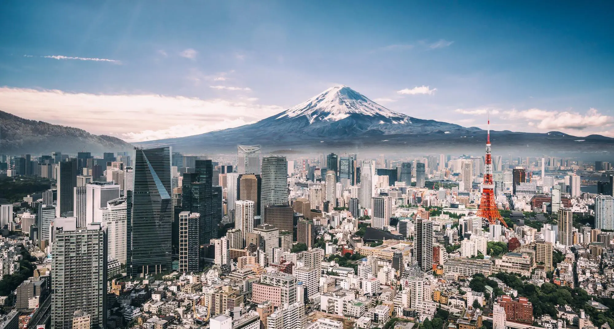
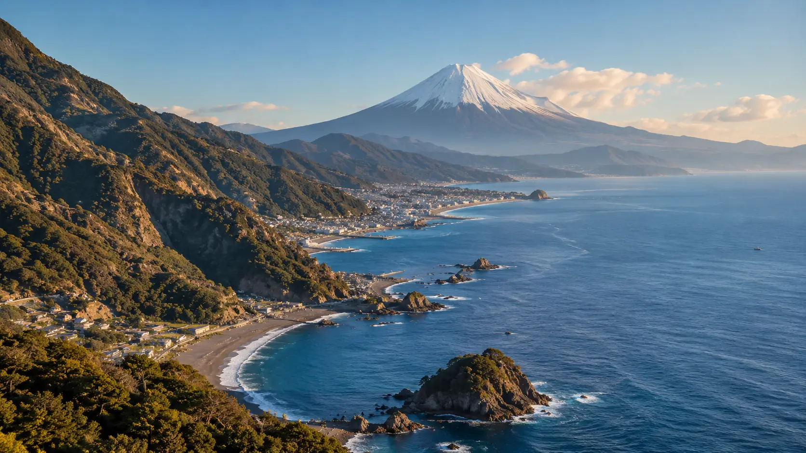
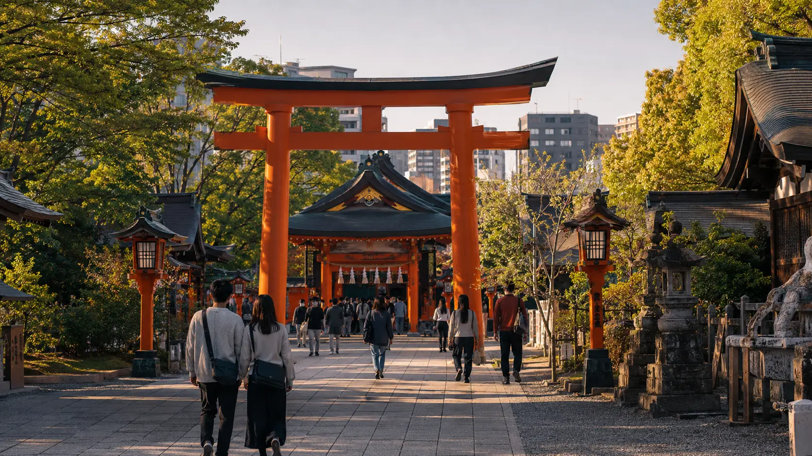
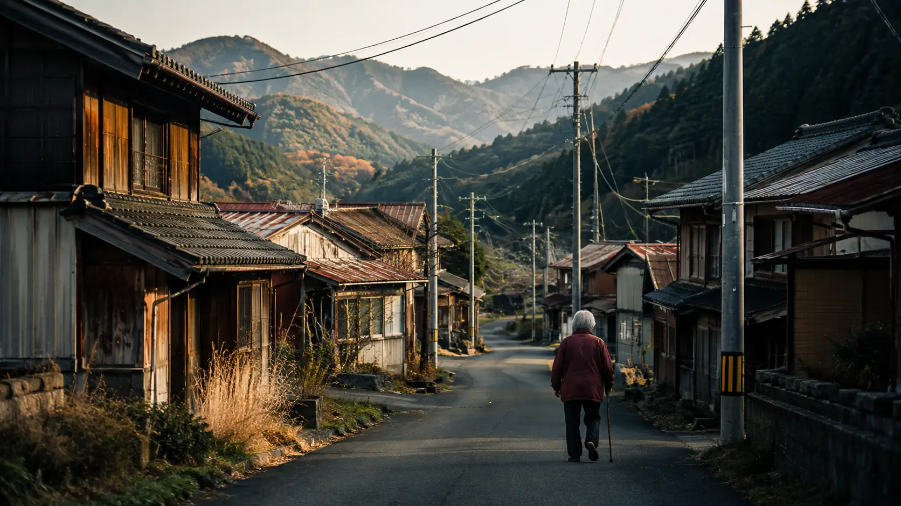
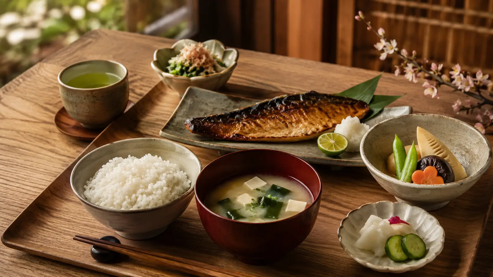
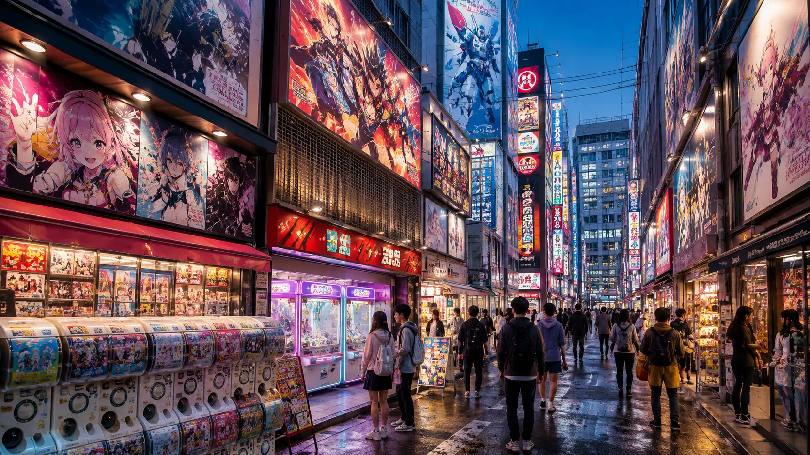
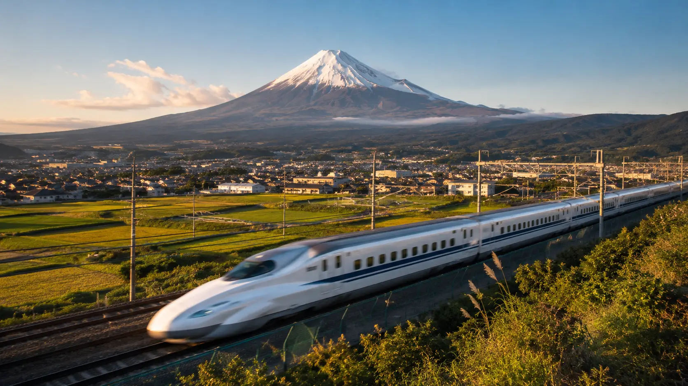

1. Japan: More Than the Image the World Knows
Few countries have created an international image as recognizable as Japan. Mention its name almost anywhere in the world and a familiar collection of images quickly appears: Mount Fuji rising above the landscape, cherry blossoms covering parks in pink, centuries-old temples, samurai and geisha, crowded streets glowing with neon signs, bullet trains crossing the country at remarkable speed, advanced electronics, anime, manga, video games and some of the world's most recognizable food.
All of those things are genuinely connected to Japan. But taken together, they can also create an illusion: the idea that Japan can be understood simply as a country where ancient tradition exists alongside futuristic technology.
The reality is considerably more complex.
Japan is an island nation in East Asia whose modern identity has been shaped by geography, centuries of political and cultural development, periods of isolation and international exchange, rapid industrialization, war, reconstruction and profound social transformation. Today, just under 123 million people live in the country, spread across highly urbanized metropolitan regions, smaller cities, rural communities and islands that can differ greatly from one another.
Even the physical scale of the country is sometimes misunderstood. Japan covers roughly 378,000 square kilometers and is organized into 47 prefectures, stretching across a long archipelago whose geography has helped produce substantial regional differences in climate, landscape, food, customs and ways of life. Tokyo may dominate the international imagination, but Tokyo is not Japan any more than a single famous landmark can represent an entire country.
This diversity is one reason many apparent contradictions disappear once Japan is examined more closely. Historic shrines can stand a short distance from dense commercial districts. Traditional festivals continue in communities surrounded by modern infrastructure. Long-established businesses operate alongside some of the world's most sophisticated industries. Regional customs survive even within a highly connected national society. What may look from the outside like a constant struggle between an ancient Japan and a modern Japan is often simply the result of different layers of the country's history continuing to exist at the same time.
Tradition in Japan has also never meant complete resistance to change. Ideas, religions, technologies and cultural influences have repeatedly entered the Japanese archipelago from elsewhere, been adapted to local circumstances and eventually become part of what later generations considered distinctly Japanese. The country visible today is therefore not the product of a civilization preserved unchanged for centuries, but of continuous transformation.
The same applies to modern Japan. Its global reputation for technology, manufacturing and efficient infrastructure represents an important part of the country's development, but it does not explain Japanese society by itself. Behind that image is a country dealing with questions familiar to many developed nations as well as challenges that are particularly significant in Japan, including demographic change, the future of regional communities and the changing relationship between established social expectations and younger generations. These issues will become increasingly important later in this article.
Japan's enormous cultural influence abroad adds another layer. Millions of people encounter the country for the first time through animation, games, films, music, food, fashion or consumer technology. These exports have helped make Japan familiar even to people who have never visited it. Yet international popularity can sometimes turn individual aspects of Japanese culture into symbols for the whole country, creating a version of Japan that is simultaneously recognizable and incomplete.
Understanding Japan therefore requires moving beyond both extremes: it is neither a society trapped in its past nor a futuristic country fundamentally unlike the rest of the world. It is a modern nation whose history remains unusually visible, a densely populated country containing large areas of mountains and countryside, and a global cultural power whose everyday reality is far broader than the images it exports.
That is the Japan this article will explore.
Not just the Japan of temples, technology, sushi or anime, but the country that connects all of them — the geography that helped shape it, the history that transformed it, the society that sustains it and the changes that will determine what Japan becomes next.
2. An Island Nation Shaped by Geography
Japan's geography is not simply the setting in which its history unfolded. It is one of the forces that has continuously shaped how the country developed, where people live, how cities expanded and how communities adapted to both opportunity and danger.
Japan is an archipelago stretching along the eastern edge of Asia, between the Pacific Ocean and the seas that separate it from the Korean Peninsula, China and Russia. Although the country consists of thousands of islands, most of its population and economic activity are concentrated on four main ones: Honshu, Hokkaido, Kyushu and Shikoku. Honshu is by far the largest and contains many of Japan's best-known cities, including Tokyo, Yokohama, Osaka, Kyoto, Nagoya and Hiroshima.
Seen on a map, Japan appears long and relatively narrow. That shape creates much greater geographical variety than its size might suggest. The country extends across several climate zones, from the colder winters and heavy snowfall of northern regions such as Hokkaido to the warmer, subtropical conditions found in Okinawa and the southern islands. Seasonal differences are therefore not identical across Japan, even though spring cherry blossoms, humid summers, autumn foliage and winter snow have become part of the country's familiar international image.
Much of Japan is mountainous. Large portions of the land are covered by mountains and forests, leaving comparatively limited flat terrain for major cities, industry and intensive settlement. As a result, many of Japan's largest urban areas developed along coastal plains and river basins, where available land could support dense populations, transport networks and economic activity.
This physical limitation has had enormous consequences. Metropolitan regions expanded intensely rather than spreading evenly across the country, helping create some of the most densely populated urban corridors in the world. Tokyo and the surrounding region are the most famous example, but similar concentrations developed around Osaka, Nagoya and other major economic centers.
The mountains have also contributed to strong regional identities. Communities separated by difficult terrain historically developed local customs, foods, dialects and economic traditions that did not always disappear when modern transportation connected the country more closely. Japan today is highly integrated, but its geography still helps explain why different regions can feel surprisingly distinct.
Few features of Japan's landscape are more internationally recognizable than Mount Fuji. Rising to 3,776 meters, it is the country's highest mountain and an active volcano. Its near-symmetrical profile has become one of Japan's most powerful national symbols, appearing for centuries in art, literature and religious traditions as well as in modern tourism and popular imagery.
Mount Fuji is also a reminder of a much larger geological reality.
Japan lies near the boundaries of several tectonic plates in one of the most geologically active regions on Earth. Earthquakes are therefore a recurring part of life, and the country also contains numerous volcanoes. Some earthquakes are minor and barely noticeable, while others have caused catastrophic destruction. The threat of seismic activity has influenced everything from building standards and emergency planning to public education and infrastructure design.
The surrounding ocean creates another major risk. Undersea earthquakes can generate tsunamis, making coastal preparedness especially important. Japan's long experience with earthquakes and tsunamis has produced sophisticated monitoring systems and disaster-response practices, although no amount of preparation can completely eliminate the danger posed by extreme natural events.
The sea, however, has never been only a threat.
For centuries, it has also provided food, transport routes and connections with neighboring societies. Fishing became deeply embedded in many coastal communities, while maritime trade eventually became essential to Japan's industrial and economic development. Modern Japan remains heavily connected to the sea, with major ports supporting the movement of goods into and out of a country that depends substantially on international trade and imported resources.
Japan's rivers are generally short and often flow rapidly from mountainous interiors toward the coast. Although they are not comparable in scale to the great river systems of continental Asia, they have played important roles in agriculture, settlement and water supply. Fertile plains and valleys became especially valuable in a country where usable agricultural land was limited.
Rice cultivation became particularly important in many of these areas. Its historical significance goes far beyond food, influencing rural economies, land organization and cultural life over centuries. The deeper story of Japanese cuisine belongs elsewhere, but the relationship between geography, agriculture and settlement is essential to understanding how the country developed.
The natural environment also contributed to Japan's strong awareness of seasonal change. The progression of spring, summer, autumn and winter affects landscapes dramatically across much of the country, and seasonal events remain highly visible in everyday life. Cherry blossoms in spring and changing leaves in autumn are internationally famous, but they are part of a broader relationship between climate, landscape and social traditions.
At the same time, Japan's geography has created a striking contrast between concentration and emptiness. Enormous metropolitan areas contain millions of people, while mountainous regions and remote islands may have small and declining populations. This divide has become increasingly important as Japan's demographic challenges place pressure on rural communities, a subject we will return to later.
Geography has therefore shaped far more than Japan's scenery. It influenced where people could settle, how communities communicated, what kinds of natural disasters they had to endure, how agriculture developed and why so much modern economic activity became concentrated along particular coastal corridors.
Before understanding Japan's history, society or cities, it is necessary to understand this basic fact: Japan developed on a narrow, mountainous and geologically unstable chain of islands where usable land was limited, regional differences were significant and the sea was always close.
That geography did not determine everything Japan would become.
But it helped define the conditions under which almost everything else happened.
3. From Ancient Japan to a Modern State
Japan's modern identity cannot be understood without its history, but this article does not need to recount every dynasty, conflict or political transformation in detail. What matters here is the broader journey: how a collection of communities on an island archipelago gradually developed into a centralized state, how military governments shaped the country for centuries, how Japan opened itself to the modern world, and how the nation rebuilt itself after one of the most destructive periods in its history.
Human settlement in the Japanese archipelago stretches back thousands of years. Early societies developed distinctive local cultures long before the emergence of a unified political system, while migration and contact with the Korean Peninsula and China introduced new technologies, agricultural practices, writing systems and religious ideas. Over time, these influences were adapted rather than simply copied, becoming part of a developing Japanese cultural and political identity.
By the first millennium CE, political power was increasingly concentrated around the imperial court. Institutions influenced by Chinese models helped shape administration, law and written culture, while Buddhism became an important religious and political force alongside older local beliefs that would later be associated with Shinto. Capitals were established at different locations before Kyoto became the imperial center in 794, beginning a period in which court culture reached extraordinary levels of sophistication.
Yet political authority in Japan gradually shifted away from the imperial court.
From the late twelfth century onward, military elites became increasingly dominant. The emergence of the shogunate created a system in which emperors continued to hold enormous symbolic significance while practical political power was often exercised by military rulers. Samurai became one of the most influential social and military classes in Japanese history, and rival warrior families competed for control during long periods of political fragmentation.
The most dramatic of these periods was the Sengoku era, sometimes described as Japan's age of warring states. From roughly the fifteenth to the late sixteenth century, regional lords fought for territory and influence in a landscape marked by shifting alliances and frequent warfare. Eventually, a series of powerful leaders succeeded in reunifying much of the country, laying the foundations for a more stable political order.
That stability was consolidated under the Tokugawa shogunate, established in 1603. For more than two and a half centuries, Japan experienced a long period of internal peace, political control and economic development. Edo — modern Tokyo — grew into one of the world's largest cities, commercial networks expanded and urban culture flourished.
This era is often associated with Japanese isolation, but the reality was more nuanced. The Tokugawa government severely restricted foreign relations and tightly controlled overseas contact, yet Japan was never completely cut off from the outside world. Trade and diplomatic exchanges continued through limited channels involving the Dutch, Chinese, Koreans and others. What changed was not the existence of international contact, but the degree to which the government regulated it.
By the nineteenth century, however, increasing pressure from Western powers made that system difficult to maintain.
In 1853, a fleet commanded by U.S. Commodore Matthew Perry arrived in Japan and demanded the opening of ports to American ships. The encounter became one of the major turning points in Japanese history. Within a relatively short period, the Tokugawa political order collapsed, imperial authority was formally restored and the country entered the transformation known as the Meiji Restoration beginning in 1868.
Japan then modernized at extraordinary speed.
The new government dismantled much of the old feudal system, created a national army, expanded modern education, built railways and industrial infrastructure, established new political institutions and actively studied Western technologies and administrative systems. At the same time, leaders were determined to preserve national sovereignty and avoid the colonial domination that European powers had imposed elsewhere in Asia.
The results were remarkable, but they also transformed Japan into an imperial power.
By the early twentieth century, Japan had defeated both China and Russia in major wars and expanded its influence across East Asia. Korea was annexed in 1910, and Japanese imperial expansion continued during the following decades. This period brought industrial growth and international power, but it also involved military occupation, colonial rule and immense suffering across the region.
The expansion ultimately led Japan into the Second World War in the Pacific. After years of increasingly destructive conflict, the war ended in 1945 following the atomic bombings of Hiroshima and Nagasaki and the Soviet Union's entry into the war against Japan. Japan surrendered in August 1945, leaving much of the country devastated.
The postwar transformation was just as dramatic as the modernization that had preceded it.
Under Allied occupation, Japan adopted a new constitution that came into effect in 1947. Political institutions were reorganized, democratic reforms were introduced and the emperor's constitutional role was redefined. Article 9 of the constitution renounced war as a sovereign right of the nation, creating one of the most distinctive elements of Japan's postwar political identity.
During the decades that followed, Japan experienced extraordinary economic growth. Manufacturing, technology, automobiles, electronics and international trade helped turn the country into one of the world's largest economies. By the second half of the twentieth century, Japan had gone from wartime destruction to becoming a major industrial and financial power.
That economic success fundamentally changed daily life. Cities expanded, infrastructure improved, education levels rose and a large middle class emerged. Japan's international image increasingly shifted away from militarism and toward technological innovation, industrial quality and cultural influence.
But Japan's postwar story did not remain one of uninterrupted growth. The collapse of the country's asset-price bubble in the early 1990s began a long period of slower economic performance, while demographic pressures became increasingly important. An aging population, low birth rates and the decline of some rural communities now form part of a new phase in Japan's development.
The history of Japan is therefore not a simple progression from ancient tradition to modernity. The country has repeatedly transformed itself while carrying elements of earlier periods forward. Imperial institutions survived military governments. Traditional cultural practices continued through industrialization. Cities rebuilt after war while preserving historical districts, rituals and institutions. New technologies appeared without completely displacing older ways of life.
This ability to absorb change without entirely erasing the past is one of the recurring themes in Japan's history.
It also explains much of the country visible today: a constitutional democracy whose emperor belongs to an institution with ancient origins, an advanced industrial economy shaped by rapid nineteenth-century modernization, and a society in which historical symbols continue to exist within one of the most technologically developed nations in the world.
Japan's past is far too extensive to fit into a single overview.
But these transformations — state formation, military rule, controlled international contact, rapid modernization, imperial expansion, wartime destruction and postwar reconstruction — created the foundations of the Japan that exists today.

4. The Emperor, Government and Modern Japan
Few institutions illustrate the connection between Japan's past and present as clearly as the imperial institution. Japan has an emperor whose origins belong to the deepest layers of the country's history, yet the political system surrounding that institution today is a modern parliamentary democracy based on popular sovereignty.
This distinction is essential.
Under Japan's postwar Constitution, sovereignty resides with the people. The Emperor does not govern the country, determine national policy or exercise independent political authority. Instead, Article 1 of the Constitution defines the Emperor as the symbol of the State and of the unity of the people, while governmental power is exercised through democratic institutions.
Since May 1, 2019, the throne has been occupied by Emperor Naruhito, the 126th emperor according to the traditional imperial succession. His accession began the Reiwa era, the name used for the current period of the Japanese imperial calendar.
The emperor performs a variety of constitutional and ceremonial duties, but these acts take place with the advice and approval of the Cabinet. They include formally promulgating laws and treaties, convoking the National Diet, appointing the prime minister after that person has been designated by the Diet, receiving foreign ambassadors and performing other state ceremonies. The important point is that these actions do not give the emperor independent political decision-making power.
This arrangement makes the imperial institution one of the clearest examples of how modern Japan preserved an element of its historical identity while fundamentally changing its political meaning. The emperor remained, but the system of sovereignty surrounding the throne was transformed.
Political authority in contemporary Japan is centered on elected institutions.
The country's national legislature is the National Diet, which the Constitution identifies as the highest organ of state power and the country's sole law-making organ. It consists of two chambers: the House of Representatives, the lower house, and the House of Councillors, the upper house. Members of both chambers are elected by the public.
The House of Representatives has 465 members whose terms can last up to four years, although the chamber can be dissolved before a term is completed. The House of Councillors has 248 members serving six-year terms, with approximately half of its seats contested every three years. Unlike the lower house, the House of Councillors cannot be dissolved.
Although both chambers participate in legislation, they do not always possess identical authority. The House of Representatives has greater power in several important situations, including the approval of the national budget, treaties and the designation of the prime minister when the two houses cannot reach agreement.
Japan's prime minister is therefore not directly elected by voters in a nationwide presidential election. Citizens elect members of the Diet, and the Diet designates the prime minister from among its members. The prime minister then heads the Cabinet, which directs the executive branch of government.
This places Japan within the broad family of parliamentary democracies rather than presidential systems.
Political parties consequently play a major role in determining who governs. Elections decide the balance of representation within the Diet, and the ability of a party or coalition to command sufficient parliamentary support normally determines who can form a government. Changes in party leadership, coalition agreements and election results can therefore alter national leadership without changing the fundamental constitutional structure.
At the same time, Japan's political system includes an independent judiciary. The Constitution establishes a separation of powers among the Diet, Cabinet and judiciary, with each forming part of a system intended to limit the concentration of governmental authority.
Below the national government, Japan is divided administratively into 47 prefectures, each with its own elected governor and assembly. Municipal governments operate at the level of cities, towns and villages, dealing with many aspects of everyday public administration. This local structure becomes especially significant when considering the enormous differences between densely populated metropolitan areas and small rural communities facing population decline.
Modern Japanese government therefore operates at several levels, from national institutions in Tokyo to prefectural and municipal authorities across the archipelago.
Yet the relationship between government and society in Japan cannot be understood only by drawing an institutional diagram. Like every democracy, Japan's political system has been shaped by its own history, political culture and economic development. The decades following the Second World War produced long periods of political continuity alongside enormous changes in the country itself.
During those decades, Japan had to manage one of the fastest economic transformations in modern history while redefining its international position. It developed close security and economic relations with the United States, became deeply integrated into the global economy and gradually assumed an important diplomatic role without returning to the type of military expansion that had characterized the first half of the twentieth century.
The postwar Constitution became central to that identity.
Its most internationally famous provision is Article 9, under which Japan renounces war as a sovereign right of the nation and rejects the use of force as a means of settling international disputes. Japan nevertheless maintains the Japan Self-Defense Forces, and the interpretation of the country's constitutional and security responsibilities has evolved over the decades. Questions surrounding defense policy remain an important part of Japanese political debate, particularly as the security environment in East Asia changes.
This is one area where the contrast between historical memory and modern necessity becomes especially visible. The destruction of the Second World War helped shape a powerful postwar commitment to peace, while contemporary Japan must also consider its security within a region containing major military powers and longstanding geopolitical tensions.
Domestic politics faces a very different set of pressures.
Japan must manage an aging and shrinking population, labor shortages, the financial burden of social welfare, the future of smaller communities, economic competitiveness and questions about how much immigration the country will require in the decades ahead. These challenges are not separate from Japan's political system; increasingly, they are among the issues that will test its ability to adapt.
Yet one remarkable feature remains.
At the center of this modern constitutional democracy stands an imperial institution whose historical roots extend far beyond the political system surrounding it.
An emperor opens sessions of a democratically elected legislature. Ancient ceremonies continue within a state governed by a postwar constitution. Imperial era names coexist with the international calendar, while elected politicians rather than the monarch determine national policy.
From the outside, these combinations can appear contradictory.
Within Japan, they are another example of something we have already encountered repeatedly: the country did not become modern simply by removing everything that came before. Instead, institutions were transformed, reinterpreted and incorporated into a new political order.
Modern Japan is therefore neither an empire governed by an emperor nor a country that abandoned its imperial past.
It is a parliamentary democracy in which political sovereignty belongs to the people, while one of the oldest institutions associated with Japanese history continues to occupy a highly visible symbolic place within the nation.
5. Tokyo and the Megacities of Japan
For millions of people around the world, Tokyo is the first image that comes to mind when they think of modern Japan. Vast railway stations, illuminated commercial districts, crowded pedestrian crossings, narrow residential streets and towers stretching across the horizon have made the capital one of the most recognizable urban landscapes on Earth.
But Tokyo is more than Japan's largest city.
It is the clearest expression of one of the defining characteristics of the country: the extraordinary concentration of people, infrastructure, government and economic activity within a relatively limited amount of usable land.
According to preliminary results from Japan's 2025 Population Census, Tokyo Metropolis had approximately 14.25 million residents, making it the country's most populous prefectural-level jurisdiction. When Tokyo is considered together with neighboring Kanagawa, Saitama and Chiba, the wider metropolitan region contained almost 37 million people — about 30 percent of Japan's entire population.
Understanding those numbers requires one important clarification. Tokyo does not function administratively like an ordinary Japanese city. The Tokyo Metropolis is one of Japan's 47 prefectural-level divisions and contains the famous 23 special wards, as well as 26 cities, five towns and eight villages. The intensely urbanized central wards form what most people imagine when they picture Tokyo, but the metropolitan jurisdiction stretches much farther and even includes mountainous areas and distant islands.
This alone reveals how misleading the international image of Tokyo can sometimes be. The capital is not one continuous landscape of skyscrapers and neon. Dense commercial centers exist beside residential neighborhoods, parks, rivers, older districts and suburban communities, while the western portions of the metropolis eventually transition toward mountains and far less densely populated landscapes.
Tokyo's enormous scale is the result of centuries of development.
Known historically as Edo, the settlement became the political center of the Tokugawa shogunate in the early seventeenth century and grew into one of the world's largest cities long before Japan's modern industrialization. Following the Meiji Restoration, Edo was renamed Tokyo — meaning "Eastern Capital" — and became the center of the new national government. Railways, industry and population growth transformed the city during the following decades, while reconstruction after earthquakes and war repeatedly reshaped its physical appearance.
The Tokyo visible today is therefore not a city that appeared suddenly during Japan's technological rise in the twentieth century. It is the latest version of an urban center that has been accumulating political and economic importance for hundreds of years.
One of the most important systems making such an enormous metropolitan region possible is transportation.
Railways form a fundamental part of everyday mobility in Tokyo and Japan's other large urban regions. An interconnected network of JR lines, private railways, subways and other services allows vast numbers of people to move between residential suburbs, commercial centers, universities and workplaces. Public transportation plays a particularly important role in commuting within Japan's major urban areas, where dense development makes rail-based mobility central to daily life.
This has influenced the physical structure of Japanese cities. Railway stations are frequently much more than places where passengers board trains. Major stations can become enormous urban centers surrounded by offices, department stores, restaurants, hotels and entertainment districts. Development therefore tends to cluster around transportation hubs, connecting mobility with commerce and everyday activity.
That pattern can be seen throughout Tokyo. Rather than possessing a single dominant downtown in the traditional sense, the metropolis contains numerous major centers. Shinjuku, Shibuya, Marunouchi, Ikebukuro, Ueno and other districts perform different commercial, administrative and cultural roles, connected by transportation networks that allow them to function as parts of a much larger urban system.
The result is a city whose scale can be difficult to understand from a map alone. What appears to be one enormous city is actually a network of interconnected centers extending far beyond the boundaries of Tokyo itself into surrounding prefectures.
Yet Tokyo is only one part of Japan's urban story.
Official Japanese statistical classifications recognize several major metropolitan areas across the country. The Kanto Major Metropolitan Area is centered on Tokyo and surrounding major cities such as Yokohama, Kawasaki, Saitama, Chiba and Sagamihara. Farther west, the Kinki Major Metropolitan Area links Osaka with cities including Kyoto, Kobe and Sakai, while the Chukyo Major Metropolitan Area is centered on Nagoya. Japan also contains important metropolitan regions around Sapporo, Sendai, Hiroshima, Fukuoka and other regional centers.
Each performs a different role within the country.
Osaka has historically been one of Japan's great commercial centers and remains at the heart of the country's second major urban concentration. Together with nearby Kyoto and Kobe, it forms part of an extensive urban corridor in the Kansai region where major cities with very different identities exist remarkably close to one another. Kyoto carries extraordinary historical importance, Osaka is strongly associated with commerce and urban life, and Kobe developed as a major international port.
Nagoya, located between the Tokyo and Kansai regions, anchors another major metropolitan area and lies within one of Japan's most important industrial regions. Its position along the heavily developed Pacific corridor illustrates how Japan's modern economy became concentrated not randomly across the archipelago but along particular areas where large cities, ports, manufacturing centers and transportation infrastructure could connect efficiently. Japan's official metropolitan classifications identify Nagoya as the central city of the Chukyo Major Metropolitan Area.
Yokohama, immediately south of Tokyo, demonstrates how difficult it can be to separate individual Japanese cities from their surrounding metropolitan systems. It is a major city in its own right, yet its urban area is deeply integrated with the broader Tokyo region through employment, transportation and continuous development.
Other cities provide regional counterweights to this concentration. Sapporo serves as the dominant urban center of Hokkaido, Sendai plays a major role in northeastern Japan, Hiroshima anchors an important part of western Honshu, and Fukuoka has become one of the principal urban centers of Kyushu. Japan's official statistical framework recognizes major metropolitan areas centered on each of these cities, demonstrating that the country's urban network extends far beyond the three largest concentrations.
Together, these cities create an urban Japan that is much more complex than the familiar image of Tokyo surrounded by an otherwise traditional countryside.
At the same time, their growth exposes one of the country's greatest modern imbalances.
Japan's population is shrinking nationally, but that decline is not occurring evenly. Preliminary results from the 2025 census found that population decreased in 1,558 of Japan's 1,719 municipalities, more than 90 percent of the total, even while Tokyo remained the country's largest population center.
This means Japan is experiencing two demographic realities at once.
Large metropolitan areas continue to attract people, businesses, universities and employment opportunities, while many smaller towns and rural communities face shrinking populations and increasing proportions of elderly residents. Young people leaving regional areas for education or employment can intensify that process, reducing the number of working-age residents available to sustain local economies and public services.
The contrast can be striking. Japan contains some of the world's most densely developed urban environments, yet it also contains communities where schools close because there are too few children, houses stand empty and maintaining local transportation becomes increasingly difficult.
These are not separate Japans.
They are consequences of the same demographic transformation taking place across the country.
Urban concentration also produces challenges within the cities themselves. Housing costs, long commutes, crowded transportation, disaster preparedness and the continuous maintenance of enormous infrastructure systems all become more significant when millions of people depend on the same interconnected metropolitan environment. Tokyo must also prepare for earthquakes, floods, extreme heat and other hazards while continuing to function as the country's political and economic center.
At the same time, the organization of Japanese cities has helped produce characteristics that frequently surprise visitors. Dense neighborhoods can support extensive public transportation and large numbers of shops and services within relatively short distances. Residential streets may exist only minutes from major commercial districts, and enormous railway stations can connect local neighborhoods directly with distant parts of a metropolitan region.
This density does not mean every Japanese city looks alike.
Tokyo's seemingly endless metropolitan landscape differs greatly from the urban atmosphere of Osaka, the historical fabric of Kyoto, the northern environment of Sapporo or the more compact regional scale of many smaller cities. Geography, history and economic specialization have given each of these places its own identity even as national transportation and communication networks have connected them increasingly closely.
That distinction matters because modern Japan cannot be understood simply by studying Tokyo.
The capital contains an extraordinary share of the country's population and influence, but it can also distort perceptions of what everyday life looks like elsewhere. A resident of central Tokyo, a family in suburban Osaka, a factory worker near Nagoya and an elderly resident of a shrinking mountain town may all live within the same nation while experiencing dramatically different versions of it.
Japan is therefore both one of the world's most intensely urbanized societies and a country increasingly concerned about what happens beyond its largest metropolitan centers.
Its cities demonstrate the advantages of concentration: employment, infrastructure, transportation, universities, commerce and enormous networks of human activity gathered within relatively small areas. But they also reveal the demographic imbalance that will shape Japan's future.
Tokyo represents this contradiction better than anywhere else.
It is a metropolis containing roughly one-tenth of Japan's population within Tokyo itself and almost one-third when the surrounding four-prefecture metropolitan region is considered. It continues to concentrate people and opportunity even as much of the country becomes smaller.
The neon streets and crowded trains are real.
But behind them lies a much more important story: modern Japan has become a nation whose people are increasingly concentrated in enormous urban networks while hundreds of smaller communities confront a very different future.
To understand what happens inside those cities — how people live together, what society expects from individuals and how those expectations are changing — we now have to move from Japan's urban landscape to its people.
6. A Society Built Around Order, Community and Change
Japan is frequently described from the outside as an unusually orderly society. Visitors notice people lining up for trains, relatively quiet public transportation, carefully observed rules in shared spaces and countless small forms of etiquette governing everyday interactions. These behaviors are real enough to be recognizable, but they can easily lead to an oversimplified conclusion: that Japanese society operates because everyone thinks, behaves and lives in essentially the same way.
It does not.
Japan is a country of more than 120 million people whose experiences vary enormously according to age, region, occupation, income, family circumstances and personal values. Tokyo is different from a rural village in Akita. Someone entering the workforce today may have very different expectations from a person who began working during the economic boom of the 1970s or 1980s. Social conventions remain important, but the society surrounding them is continuously changing.
What does distinguish many aspects of everyday life is the importance placed on awareness of other people.
Japanese public etiquette often emphasizes avoiding unnecessary inconvenience to those sharing the same space. On trains, for example, passengers are generally expected to keep phone conversations to a minimum, allow others to exit before boarding and respect priority seating. Bowing, removing shoes in certain environments and following situation-specific rules are other familiar examples of behavior shaped by context and consideration for others. Japan's official tourism organization itself describes respect for public etiquette as an important part of how extremely dense cities such as Tokyo function.
These expectations are sometimes summarized internationally through ideas such as harmony, conformity or group consciousness. There is some truth behind those descriptions, but they should be used carefully. Japanese society contains strong traditions of coordinating behavior within families, schools, workplaces and communities, yet this does not mean that individual preference disappears or that disagreement is absent. Social expectations influence behavior in Japan just as they do elsewhere; what differs is the form those expectations may take and the situations in which they become particularly visible.
The distinction matters because stereotypes about Japan often transform social tendencies into absolute rules.
Not every Japanese person is reserved. Not every workplace is rigid. Not every young person follows traditional expectations. Regional differences are significant, and urban life has created environments in which people can choose lifestyles that would have been much more difficult for previous generations.
Japan's relationship with work offers one of the clearest examples of this transformation.
During the decades of rapid postwar economic expansion, an influential image emerged of the Japanese employee whose identity was closely connected to the company. Large corporations became associated with practices such as long-term employment, seniority-based advancement and strong organizational loyalty. The famous international stereotype of the Japanese salaryman grew partly from this period.
But that model never represented every worker, and it represents modern Japan even less completely today.
Employment patterns have diversified, more people work outside traditional long-term corporate structures, and younger generations increasingly encounter a labor market very different from the one that shaped postwar Japan. Long working hours and difficulties balancing employment with family life have also generated substantial public debate. The Japanese government has pursued Work Style Reform policies specifically in response to challenges including a shrinking working-age population and the need to accommodate more diverse circumstances such as childcare and elder care.
This changing relationship with work is connected directly to Japan's demographic transformation.
As of October 1, 2024, approximately 36.24 million people in Japan were aged 65 or older, representing 29.3 percent of the population. Children under 15 accounted for only 11.2 percent. Japan consequently has one of the most aged population structures in the world, and official projections indicate that the proportion of people aged 65 or older will continue rising over the coming decades.
These statistics affect everyday society in ways that population figures alone cannot capture.
A larger elderly population means greater demand for healthcare, pensions and caregiving. At the same time, fewer working-age people are available to support those systems and fill jobs throughout the economy. The impact is particularly visible outside the largest cities, where younger residents frequently move elsewhere for education or employment while older populations remain.
Family structures are changing as well.
Japanese households have gradually become smaller, and the number of people living alone has increased. The 2020 Population Census recorded approximately 55.8 million households, while the average number of members per private household declined in every one of Japan's 47 prefectures compared with the previous census. Tokyo had the smallest average household size, at fewer than two people.
Among older people, living arrangements are becoming an especially significant issue. Japan's 2025 Annual Report on the Ageing Society notes that households containing someone aged 65 or older account for roughly half of all households, while the number of elderly people living alone has been increasing.
These changes challenge one of the common images of Japanese society: the multigenerational household in which adult children naturally care for elderly parents. Such families still exist, but they are no longer sufficient as a universal model for understanding the country. Smaller families, later marriage, fewer children and geographical separation between generations have changed the practical reality of family support.
Japan is therefore having to reconsider who provides care, how communities support elderly residents and how work can be organized when employees must simultaneously care for children or aging parents.
Gender roles are undergoing a similar renegotiation.
Postwar Japanese society was strongly influenced by a household model in which men were expected to become primary wage earners while women carried much of the responsibility for domestic work and raising children. That model has weakened substantially as women's participation in paid employment has expanded and economic circumstances have changed.
However, greater participation in employment has not automatically eliminated longstanding differences in expectations surrounding careers, household responsibilities and leadership. Gender equality, work-family balance and women's participation in decision-making remain active areas of Japanese public policy. The government's Gender Equality Bureau continues to identify work, family life, leadership opportunities and regional inequality as major components of the country's gender-equality agenda.
Once again, Japan is not simply choosing between "traditional" and "modern" society.
Different models exist simultaneously.
A household may contain two full-time workers while still reflecting older assumptions about who performs domestic labor. A company may preserve hierarchical customs while introducing flexible working arrangements. Younger adults may value independence while remaining influenced by expectations surrounding education, employment, marriage or responsibility toward parents.
The tension between continuity and change appears throughout Japanese society.
Another major transformation is becoming increasingly visible: Japan is becoming more internationally diverse.
For much of its modern history, Japan has often been perceived — both domestically and internationally — as a relatively homogeneous society. That image has never been completely accurate. The country includes longstanding minority communities and regional identities, including the Indigenous Ainu of northern Japan and the distinctive historical and cultural heritage of the Ryukyu Islands, particularly Okinawa.
Modern immigration is adding another dimension.
At the end of 2025, Japan had 4,125,395 foreign residents, the highest number recorded to that point and an increase of 9.5 percent from the previous year.
Foreign residents now work, study and raise families across Japan, although their distribution is uneven and their presence is particularly visible in certain urban and industrial regions. Labor shortages have made international workers increasingly important in sectors ranging from manufacturing and construction to healthcare, hospitality and agriculture.
The government itself increasingly discusses immigration-related policy in terms of the acceptance of foreign nationals and the creation of communities in which Japanese and foreign residents can live together. In 2025, government-level councils continued addressing the inclusion of foreign human resources and the development of a more diverse society.
This does not mean Japan is rapidly becoming an immigration society identical to countries with much longer histories of large-scale migration. Foreign residents still represent a relatively small share of the total population. But their growing numbers are changing workplaces, schools, neighborhoods and political debates about what Japanese society may look like in the future.
Generational change may ultimately prove just as important.
Young Japanese people have grown up in a country very different from the one experienced by their grandparents. Most have no personal memory of Japan's period of extraordinary postwar economic expansion. They entered adulthood in a society of slower economic growth, digital communication, declining population and much greater exposure to international culture.
That does not automatically make younger generations less Japanese or less interested in tradition. It means the environment in which social expectations operate has changed.
Traditional festivals can remain important while young people communicate through global social platforms. Respect for family can coexist with decisions to marry later or not marry at all. Corporate loyalty can remain valued while workers seek greater flexibility. Communities can preserve local customs while relying increasingly on newcomers to sustain local industries.
Modern Japan is full of these combinations.
Even the idea of social order requires some perspective. Japan's dense metropolitan areas depend on millions of people following shared systems every day, from transportation schedules and waste collection rules to disaster procedures and neighborhood organization. Cooperation makes those systems easier to operate, but maintaining them becomes more complicated when populations age, communities shrink and lifestyles diversify.
The same social habits that can create stability may therefore face pressure when circumstances change.
A community accustomed to organizing activities through large numbers of local volunteers may struggle when most residents are elderly. A company designed around workers able to remain in an office for long hours may have difficulty attracting younger employees or parents with caregiving responsibilities. A rural municipality may want to preserve local traditions while simultaneously needing foreign workers or newcomers from larger cities simply to sustain basic services.
Japan's greatest social challenge may therefore not be abandoning tradition.
It may be deciding which expectations remain useful, which need to change and how quickly that change can occur without weakening the sense of cooperation that has helped communities function.
There is no single answer because there is no single Japanese way of life.
Japan contains corporate executives and farmers, students and retirees, lifelong residents of mountain villages and people born abroad who now call Japan home. It contains neighborhoods where families have lived for generations and apartment buildings where residents may barely know one another. It contains people deeply attached to established social conventions and others actively challenging them.
Reducing all of this to ideas such as discipline, politeness or conformity misses the more interesting reality.
Japanese society has developed strong expectations surrounding consideration for others, responsibility and appropriate behavior within shared environments. Those expectations remain visible in everyday life and help explain some of the order associated internationally with the country.
But the society underneath them is changing rapidly.
An aging population, smaller households, evolving gender roles, new expectations about employment, growing numbers of foreign residents and widening differences between thriving metropolitan centers and declining regional communities are forcing Japan to reconsider institutions and lifestyles that once appeared remarkably stable.
That may be one of the most important things to understand about modern Japan.
The order visible on the surface is not evidence of a society that never changes.
It is the framework within which enormous change is already taking place.

7. Shinto, Buddhism and the Spiritual Side of Japan
Religion in Japan can be surprisingly difficult to describe using categories that seem straightforward elsewhere.
A person may visit a Shinto shrine at New Year, participate in a Buddhist funeral, keep protective charms from religious sites and take part in festivals connected to local deities without necessarily describing themselves as deeply religious. Shrines and temples remain visible throughout Japanese cities and rural communities, yet personal religious identity does not always correspond neatly to participation in those traditions.
To understand this apparent contradiction, it is useful to begin with Japan's two most influential religious traditions: Shinto and Buddhism.
Shinto is generally regarded as Japan's indigenous religious tradition. Unlike religions founded around the teachings of a single historical figure, it developed gradually from older practices, beliefs and rituals associated with communities throughout the Japanese archipelago. Central to Shinto is the concept of kami, a broad term referring to sacred beings or presences associated with phenomena ranging from natural features and forces to ancestral or historically significant figures. Japan's National Tourism Organization describes Shinto shrines as places connected with the country's indigenous faith and the reverence of these kami.
This helps explain the close relationship between many Shinto traditions and the landscape.
Mountains, forests, waterfalls, rocks and other natural features may acquire religious significance, while shrines can be associated with particular places and local communities. Some of Japan's most recognizable spiritual landscapes therefore combine architecture with the natural environment rather than separating sacred space completely from it.
The familiar torii gate is one of the clearest visual symbols of Shinto. It commonly marks the entrance to sacred shrine space, creating a symbolic transition between ordinary surroundings and an area associated with the kami. Visitors may also encounter purification rituals, offerings, prayers, charms and fortune slips, although the precise customs vary between shrines and circumstances.
Shinto has also been closely connected with community life.
Local festivals, known broadly as matsuri, often developed around shrines and particular kami, sometimes involving processions, performances or prayers for protection, prosperity and good harvests. Their modern significance can extend beyond strictly religious devotion: festivals may simultaneously serve as spiritual observances, community gatherings and celebrations of local identity.
That combination of religion and everyday cultural life is important.
Religious traditions in Japan have influenced far more than worship. They have helped shape festivals, architecture, attitudes toward nature, performing arts, rites of passage and the ways communities commemorate both important events and the passing of generations. The Agency for Cultural Affairs notes, for example, that a number of traditional Japanese performing arts developed in connection with prayers to deities, Buddhist ceremonies and Shinto festivals.
Shinto, however, tells only part of the story.
Buddhism arrived in Japan during the sixth century, entering through wider networks of cultural exchange connecting the Japanese archipelago with the Korean Peninsula and China. Over the centuries, it became deeply embedded in Japanese political, intellectual, artistic and everyday life. Different schools and traditions developed enormous influence, while Buddhist temples became permanent features of settlements throughout the country.
Buddhism introduced philosophical and religious ideas concerning suffering, impermanence, enlightenment and the cycle of existence, although the forms practiced in Japan became extremely diverse. Traditions associated with Pure Land Buddhism, Shingon, Tendai, Nichiren and Zen are only some of the many branches that became established over the centuries.
Exploring those traditions properly would require an article of its own.
For understanding Japan as a country, what matters here is that Buddhism became so deeply integrated into Japanese life that it could no longer be treated simply as a foreign religion imported from the Asian continent. Like writing systems, political ideas and technologies that had arrived from abroad, Buddhism was adapted over generations until it became inseparable from Japanese history and culture.
Even more important is what happened between Buddhism and Shinto.
They did not simply exist as two permanently separate systems competing for followers.
For much of Japanese history, Shinto and Buddhist traditions interacted, overlapped and blended with one another. Kami could be understood through Buddhist concepts, temples and shrines could exist within closely connected religious environments, and individuals could participate in practices associated with both traditions without perceiving them as mutually exclusive. Government and cultural sources describing Japan's religious heritage repeatedly emphasize this centuries-long coexistence and syncretism.
This historical relationship is one reason religion in modern Japan can appear unusual when viewed through a strict "one person, one religion" model.
The question "Are you Shinto or Buddhist?" does not always capture how religious practice developed in the country.
Different traditions can become important at different moments in a person's life.
Shinto shrines remain closely associated with celebrations, community festivals, prayers for good fortune and visits marking significant occasions. Buddhist temples have traditionally played particularly important roles in funerary and memorial practices. At the beginning of the year, enormous numbers of people make hatsumode, the first shrine or temple visit of the year, to pray for health, success and good fortune. Japan's tourism authorities describe New Year visits and prayers at both shrines and temples as common elements of the season.
Participation in such practices does not necessarily imply exclusive religious membership.
For some people, visiting a shrine is an explicit act of faith. For others, it may be connected primarily with family custom, regional identity or tradition. For still others, the distinction between those motives may not be particularly important.
This makes statistics about religion in Japan especially difficult to interpret.
Japan maintains a very large institutional religious landscape. The national Agency for Cultural Affairs recorded more than 178,000 religious juridical persons as of the end of 2024, with Shinto and Buddhist organizations accounting for the overwhelming majority. But institutional numbers should not be treated as a direct measurement of personal belief, because religious affiliation and religious practice in Japan can overlap in ways that make simple population categories misleading.
The relationship between Shinto and Buddhism has also changed politically over time.
During the Meiji period, beginning in the nineteenth century, the government promoted a formal separation between Shinto and Buddhism after centuries in which the traditions had frequently been intertwined. Shinto subsequently became closely associated with the modern Japanese state and imperial institutions. After Japan's defeat in the Second World War, the postwar constitutional system established religious freedom and prohibited the state from granting political authority to religious organizations.
Those political developments are important, but they should not obscure the longer cultural reality.
Separating institutions by law could not erase centuries of interaction.
Shrines and temples remain present in the same towns and neighborhoods. Families may maintain customs originating from different traditions. Festivals, memorial ceremonies and seasonal practices continue to carry religious elements even when participants approach them primarily as cultural traditions.
The physical presence of these traditions is difficult to miss.
A person walking through Tokyo can move within minutes from a commercial district into the quiet grounds of a shrine or temple. In Kyoto, Nara and countless smaller communities, religious buildings form part of landscapes accumulated over centuries. Remote mountains contain pilgrimage routes and sacred sites, while local shrines can remain central landmarks in neighborhoods surrounded by modern housing and infrastructure. Japan's Agency for Cultural Affairs recognizes numerous heritage landscapes in which Buddhist, Shinto and older forms of mountain worship became intertwined.
This creates another version of the pattern we have encountered throughout Japan.
The modern did not simply replace the old.
A railway line may pass beside a centuries-old temple. Office workers may stop at a shrine before returning to skyscrapers and train stations. A technology company can hold a ceremony connected with traditional religious practice. Families that otherwise live thoroughly modern lifestyles may preserve rituals whose origins extend back centuries.
These combinations should not automatically be interpreted as contradictions.
They are evidence of how traditions remain useful by adapting to new environments.
Japan's spiritual landscape is also broader than Shinto and Buddhism.
Christianity has existed in Japan since missionaries arrived in the sixteenth century, experiencing periods of expansion, severe persecution and later revival. Christian communities remain a minority today, but Christianity has left important historical and cultural traces, particularly in regions such as Nagasaki. The history of Japan's Hidden Christians demonstrates how Christian beliefs sometimes survived persecution by adapting to an environment dominated by Buddhist and Shinto traditions.
Japan is also home to numerous newer religious movements and other forms of belief, while the spiritual traditions of communities such as the Ainu contain concepts that cannot simply be reduced to Shinto or Buddhism. Japan's religious landscape is therefore more diverse than the familiar image of temples and shrines might suggest.
Even so, Shinto and Buddhism remain the two traditions most visibly woven into the historical landscape of the country.
Their influence extends beyond questions of belief.
Ideas associated with purification, impermanence, respect for sacred spaces, remembrance of ancestors and relationships with nature have all left traces within Japanese cultural practices. But caution is necessary here as well. It would be misleading to suggest that every Japanese person interprets nature religiously, follows Buddhist philosophy or participates regularly in shrine rituals.
Japan is a highly modern society containing believers, occasional practitioners, culturally religious families, members of organized religious communities and people with little personal interest in religion at all.
What makes the country distinctive is not universal religious devotion.
It is the extent to which religious traditions can remain embedded in cultural life even when personal belief is difficult to categorize.
A shrine visit can be spiritual and customary at the same time. A Buddhist funeral can preserve family tradition without revealing everything about the beliefs of those attending it. A festival can be religious, historical, social and recreational simultaneously.
Trying to force these experiences into a single category often makes them harder rather than easier to understand.
The relationship between Shinto and Buddhism provides one of the clearest examples.
One originated within the Japanese archipelago. The other arrived from continental Asia. For centuries they interacted, blended, separated and interacted again. Their institutions remain distinct today, yet their historical influence overlaps throughout Japanese culture.
That history offers another lesson about Japan itself.
Japanese identity was never created purely by protecting local traditions from outside influence. Again and again, ideas arriving from elsewhere were absorbed, transformed and placed alongside practices that already existed.
Religion followed the same pattern.
Japan did not simply choose between Shinto and Buddhism.
It created a spiritual landscape in which both could become Japanese.

8. The Japanese Language and Writing System
Few elements of Japan are as immediately recognizable as its written language.
Japanese signs can combine intricate Chinese-derived characters with two flowing phonetic scripts, Latin letters, Arabic numerals and occasionally English words within the same line. To someone unfamiliar with the language, the result may appear extraordinarily complicated. Yet for Japanese readers, these different writing systems do not compete with one another. They perform complementary roles within a single system that developed over centuries.
The Japanese language is central to everyday life throughout the country and one of the strongest shared elements connecting regions whose customs, dialects and histories can otherwise differ significantly. It is the language of government, education, national media and most public communication, and the Agency for Cultural Affairs treats Japanese-language policy and education as a fundamental component of Japanese cultural policy.
But the Japanese spoken and written today did not develop in isolation.
Japan's early societies possessed spoken languages long before they had a writing system of their own. The decisive transformation came through contact with continental Asia, particularly China and the Korean Peninsula. Chinese characters — kanji — were introduced to the Japanese archipelago and gradually adapted to represent a language structurally very different from Chinese.
That adaptation would eventually produce one of the world's most distinctive writing systems.
Modern Japanese is principally written using three systems: kanji, hiragana and katakana. Latin letters, known in this context as romaji, also appear regularly, especially in signs, company names, advertising, technology and situations involving international communication. Official Japanese-language educational materials describe contemporary Japanese as using kanji, hiragana, katakana and the Latin alphabet together.
The three principal scripts do different kinds of work.
Kanji (漢字) are characters whose historical origins lie in Chinese writing. Rather than representing sound alone, individual kanji generally carry meaning. For example, the character 山 is associated with "mountain," while 水 is associated with "water" and 日 can represent ideas connected with the sun or day.
But kanji are not simply Chinese characters being read in Chinese.
Over centuries, Japan developed its own conventions for using and pronouncing them. Many characters acquired multiple possible readings depending on the word in which they appear. Some readings developed from historical approximations of Chinese pronunciations, while others were associated with existing Japanese words.
This can make Japanese writing challenging even for learners who already understand its basic principles. A character cannot always be pronounced correctly merely by seeing it in isolation; context may be necessary.
At the same time, kanji provide an important advantage.
Because Japanese contains many words that sound identical but have different meanings, written characters can make distinctions immediately visible. Japan Foundation teaching materials note that modern Japanese normally combines kanji with kana and that attempting to write everything phonetically would make communication more difficult because of the number of homophones in the language.
Consider the name of the country itself.
Japan is written 日本.
The first character, 日, can mean "sun" or "day," while 本 carries meanings including "origin" or "base." Together they form the country's name, normally pronounced Nihon or Nippon. This combination is also the origin of the familiar expression describing Japan as the "Land of the Rising Sun," although the history of that phrase and Japan's names is considerably richer than the simple translation suggests.
Kanji, however, could not perfectly represent Japanese grammar.
Chinese and Japanese developed with very different grammatical structures, and Japanese contains grammatical endings and particles that were difficult to express elegantly using Chinese characters alone. Over time, simplified and cursive forms of characters were used increasingly for their sounds rather than their original meanings.
From those processes emerged the two systems collectively known as kana.
The first is hiragana (ひらがな).
Hiragana consists of phonetic characters and is fundamental to ordinary Japanese writing. It is commonly used for grammatical endings, particles and Japanese words that are not normally written with kanji, as well as in situations where the kanji would be unusual or unnecessarily difficult. Hiragana can also appear above or beside kanji as furigana, indicating how a character should be pronounced.
Its relatively curved forms make hiragana visually easy to distinguish from the more angular appearance of katakana.
A sentence in Japanese will often move constantly between kanji and hiragana without the reader treating the change as unusual. Kanji may carry much of the lexical meaning, while hiragana connects those elements through grammatical structures.
For example, Japanese does not normally insert spaces between every word in the way English does. The visual contrast between kanji and kana therefore also helps readers recognize the structure of a sentence.
The second kana system is katakana (カタカナ).
Katakana represents essentially the same set of basic sounds as hiragana but uses different symbols and serves different functions. Its characters are generally more angular, and one of its most recognizable modern uses is writing words borrowed from other languages.
The English word "hotel," for example, became ホテル — hoteru.
"Computer" became コンピューター — konpyūtā.
"Coffee" became コーヒー — kōhī.
This does not mean borrowed words remain identical to their original pronunciation. They are adapted to the sound patterns available in Japanese, sometimes producing forms that may initially be difficult for speakers of the source language to recognize.
Katakana is also used for foreign names, many scientific terms, certain animal and plant names, onomatopoeia and stylistic emphasis. The Japan Foundation summarizes modern Japanese writing as combining kanji and hiragana while using katakana particularly for words of foreign origin and foreign names.
This ability to absorb foreign vocabulary provides another example of something we have repeatedly encountered in Japan's development.
Outside influences are rarely incorporated without modification.
English has supplied a particularly large amount of vocabulary to modern Japanese, especially in areas such as technology, business, fashion, entertainment and contemporary consumer culture. But once those words enter Japanese, their pronunciation, meaning and usage may change. Some expressions even combine English-derived elements in ways that would not normally exist in English.
Japanese linguists commonly refer to such vocabulary more broadly as gairaigo, or loanwords.
The phenomenon is not new.
Japanese has borrowed vocabulary from other languages for centuries. Chinese influence was especially profound, while Portuguese, Dutch and later European languages also contributed words during different historical periods. Modern English is therefore only the latest major layer in a much older process of linguistic exchange.
The result is a language whose vocabulary preserves traces of Japan's changing relationships with the outside world.
Its writing system tells a similar story.
Kanji arrived from continental Asia and were adapted to Japanese. Kana developed through the transformation of kanji. Modern vocabulary incorporates foreign words written in katakana. Romaji became another useful layer in an increasingly international and digital society.
Rather than replacing previous systems, new elements were added to them.
That is why a contemporary Japanese advertisement or railway sign may contain all of these layers simultaneously.
A single sign might combine kanji for the principal information, hiragana for grammatical elements, katakana for a foreign-derived term, Arabic numerals for a platform number and Latin letters providing an English translation.
For anyone accustomed to a single alphabet, this can appear unnecessarily complicated.
For Japanese readers, each visual system helps communicate a different kind of information.
The government has nevertheless made efforts to standardize how written Japanese is used. One important example is the Jōyō Kanji list, which identifies kanji considered appropriate for general use in areas such as public communication and education. The Agency for Cultural Affairs maintains national policies concerning both the Jōyō Kanji list and modern kana usage, reflecting the continuing role of language standardization in Japanese society.
Schoolchildren gradually learn kanji throughout their education rather than attempting to master the writing system at once. Hiragana and katakana are introduced early, followed by an expanding number of characters as students progress through school. Japan's Ministry of Education curriculum guidelines explicitly incorporate the acquisition and use of hiragana, katakana and kanji into Japanese-language education.
Technology has changed how those characters are produced, but it has not made them disappear.
Japanese can be typed using several input methods. One common approach involves entering words phonetically using the Latin alphabet and allowing software to convert the resulting sounds into hiragana, katakana or appropriate kanji. Users then select the intended characters from possible alternatives. Japan Foundation teaching materials specifically introduce this conversion process when explaining Japanese keyboard input.
A smartphone therefore allows someone to produce complex kanji without manually drawing every stroke.
That convenience has created its own modern questions about handwriting. Japanese speakers can recognize characters that they may occasionally struggle to reproduce perfectly by hand, particularly less frequently used ones. Digital communication has changed the relationship between memory, recognition and writing just as keyboards have affected spelling habits in many other languages.
Japanese writing can also move in more than one direction.
Modern texts are frequently written horizontally from left to right, particularly on websites, signs, scientific materials and many contemporary publications. Traditional vertical writing, arranged from top to bottom with columns progressing from right to left, remains common in books, newspapers, literature, calligraphy and other contexts. Digitized Japanese materials preserved by the National Diet Library demonstrate how the coexistence of horizontal and vertical text remains a defining feature of the written language.
Writing, however, represents only one dimension of Japanese.
The spoken language contains considerable regional variation.
Standard Japanese, strongly associated historically with speech in and around Tokyo, became increasingly important through national education, broadcasting and modern administration. Yet regional dialects remain widespread and can differ in pronunciation, vocabulary, rhythm and grammatical forms.
The speech of Kansai, particularly Osaka, is one of the best-known examples and remains highly recognizable within Japanese popular culture. Other regional varieties can be found throughout Tohoku, Kyushu, Shikoku, Hokkaido and elsewhere.
These differences should not be treated merely as curiosities.
Language carries regional identity, and local speech can communicate where someone grew up, how they identify with a community or even how they choose to present themselves socially.
Japan's linguistic landscape is also more diverse than Japanese dialects alone.
The Ainu language, traditionally associated with the Indigenous Ainu people of northern Japan, is a separate language rather than a variety of Japanese. Languages and speech varieties associated with the Ryukyu Islands also preserve linguistic histories distinct from standard Japanese. The Agency for Cultural Affairs, drawing on UNESCO's work on endangered languages, identifies Ainu as critically endangered and lists Yaeyama, Yonaguni, Hachijo, Amami, Kunigami, Okinawan and Miyako among endangered languages or dialects in Japan.
The Japanese government also supports initiatives intended to preserve and promote Ainu language and culture. These endangered languages are reminders that the creation of a strongly standardized national language also had consequences.
Modern nation-building, national education and mass media helped make communication across Japan much easier, but they also strengthened standard Japanese at the expense of some regional and minority languages. Understanding Japan's linguistic history therefore requires acknowledging both the unifying power of Japanese and the diversity that exists underneath it.
Language also reflects social relationships.
Japanese contains numerous ways of adjusting speech depending on circumstances, familiarity and relative social position. The broad system known as keigo, or honorific language, allows speakers to express politeness, respect and humility through vocabulary and grammatical choices.
Its use can be particularly visible in workplaces, customer service and formal situations.
Yet here again it would be misleading to imagine every conversation governed by an inflexible hierarchy. Japanese speakers constantly adjust language according to context, relationships and personality. Friends speak differently from employees addressing customers; family members communicate differently from strangers meeting for the first time.
For someone learning Japanese, these layers can make the language appear intimidating.
For native speakers, they form part of a system through which social distance and relationships can be communicated.
Names provide another small but revealing example.
In Japanese, the family name traditionally precedes the given name. Someone internationally known as Hayao Miyazaki, for example, would conventionally be written in Japanese order as Miyazaki Hayao. Japanese also makes extensive use of suffixes attached to names, such as -san, while other forms can indicate different levels of familiarity, profession, age or social relationship.
Again, these conventions tell us something larger about the country.
Language is not simply a tool for transferring information. It carries assumptions about relationships, social context and identity.
At the same time, contemporary Japanese is changing constantly.
New vocabulary emerges through technology and popular culture. Foreign words enter the language. Internet communities create expressions that move rapidly into everyday conversation. Younger generations alter how established terms are used, while digital platforms encourage abbreviations and new forms of written communication.
Japanese is therefore not an ancient linguistic system preserved unchanged inside a modern country.
It is as dynamic as the society using it.
Its writing system may preserve characters whose origins extend back more than a millennium, yet those characters now appear on smartphones, high-speed railway displays and social media. Katakana transforms foreign vocabulary into recognizable Japanese forms. Regional dialects coexist with a national standard, while endangered languages reveal older layers of the archipelago's human history.
In that sense, Japanese writing is almost a miniature version of Japan itself.
Something arrived from abroad.
Japan adapted it.
New systems emerged around it.
Later influences were added without completely removing what already existed.
And eventually the combination became so deeply associated with Japan that imagining the country without it became almost impossible.
Kanji, hiragana and katakana may initially appear to be three competing solutions to the same problem.
They are actually the accumulated record of how Japan learned to write its own language.
9. Tradition in Everyday Japanese Life
One of the easiest mistakes to make when looking at Japan is to imagine tradition as something separate from ordinary modern life.
Traditional Japan is often represented internationally through temples, kimono, tea ceremonies, wooden houses and festivals, while modern Japan appears through skyscrapers, smartphones, convenience stores and high-speed trains. This creates the impression that two different countries somehow occupy the same territory.
Everyday life is considerably less divided.
Many traditions in Japan survive not because people consciously choose to recreate the past each day, but because particular customs have been incorporated into ordinary routines, family celebrations, seasonal events and expectations about how shared spaces should be used. Some have changed enormously from their historical forms. Others are practiced only occasionally. Many are followed without requiring deep knowledge of their origins.
Japan's Agency for Cultural Affairs recognizes this connection explicitly when describing folk cultural properties. These include manners and customs passed down through everyday life in areas such as food, clothing, housing, occupations, religious faith and annual events. Tradition, in other words, is not limited to famous works of art or historic buildings; it can also exist in ordinary behavior repeated across generations.
One of the simplest examples begins at the front door.
The Boundary Between Outside and Inside
Removing shoes before entering certain indoor spaces remains one of Japan's most recognizable customs.
In many homes, the entrance contains a lowered area known as the genkan, where outdoor shoes are removed before stepping onto the raised interior floor. Slippers may then be worn inside, although they are generally removed before stepping onto tatami flooring. Separate slippers may also be provided for bathrooms. The Japan National Tourism Organization describes removing shoes indoors as an established custom connected historically with living on tatami floors.
The practice illustrates an important idea that appears repeatedly in Japanese daily life: physical spaces can have different expectations attached to them.
Outside and inside are not always treated as interchangeable environments. The change at the entrance is practical — outdoor dirt is kept away from living areas — but it also creates a clear transition between public and private space.
The custom does not mean that every Japanese home looks traditional.
Millions of people live in modern apartments containing Western-style furniture, beds and flooring. Some homes have no tatami rooms at all. Yet even in thoroughly contemporary housing, the genkan and the expectation of removing outdoor shoes often remain.
The structure changed.
The boundary survived.
Similar distinctions appear in traditional inns, schools, certain restaurants, temples and other spaces where visitors may be expected to change or remove footwear. The exact rules depend on the location, which is why everyday etiquette in Japan often requires paying attention to context rather than following one universal formula.
Everyday Etiquette
Japanese etiquette is another area where tradition and modern life frequently overlap.
Bowing is perhaps the best-known example. It can function as a greeting, an expression of gratitude, an apology, a sign of respect or part of a more formal interaction. The depth and formality of a bow may vary according to circumstances, but everyday bows can be extremely subtle — sometimes little more than a movement of the head.
Modern technology has not eliminated the gesture.
A person may bow while speaking on a mobile phone even though the other person cannot see them. Employees may bow to customers. Train staff may bow when entering or leaving a carriage. Friends may combine casual language with a small nod rather than anything resembling a formal ceremonial bow.
JNTO describes bowing as a normal feature of greetings and social interaction while emphasizing that its exact form depends greatly on context.
Other expectations concern behavior in shared spaces.
On trains and buses, loud telephone conversations are generally discouraged, passengers commonly queue before boarding, and priority seating is intended for people who need it. These habits are not ancient rituals, but they reflect broader social expectations about minimizing unnecessary inconvenience to others in crowded environments.
They also show why the distinction between "tradition" and "modern etiquette" can become blurry.
Customs do not remain alive by staying unchanged.
They survive partly because the underlying expectations behind them continue to find new situations in which they are useful.
The Calendar Still Matters
Perhaps nowhere is this continuity more visible than in Japan's relationship with the seasons.
Spring, summer, autumn and winter are not merely weather categories. Seasonal change influences festivals, decorations, commercial products, advertising, travel, food and social activities throughout the year. Government publications and tourism authorities regularly describe seasonal practices as an important feature of Japanese cultural life.
The most internationally famous example occurs every spring.
As cherry trees bloom across the country, people participate in hanami, literally "flower viewing." Families, friends and coworkers gather beneath flowering trees in parks and other public spaces, often sharing food and drinks while observing a natural event that lasts only briefly.
The custom has a long history, but its modern version can be remarkably ordinary.
People check blossom forecasts. Parks become crowded. Companies may organize gatherings. Photographs fill social media. Convenience stores and businesses launch seasonal products covered in cherry-blossom imagery.
An old seasonal custom therefore exists comfortably within twenty-first-century consumer and digital culture. JNTO continues to describe hanami as the practice of gathering beneath the blossoms for picnics and social events during the relatively short flowering season.
Autumn produces a parallel seasonal interest in changing leaves, particularly the reds of Japanese maples. Summer is associated with festivals, fireworks, yukata and other seasonal imagery, while winter brings its own rituals, celebrations and regional traditions.
None of these experiences is universal.
Someone living in central Tokyo may experience the seasons differently from someone in Hokkaido or Okinawa. Climate varies substantially across the archipelago, and lifestyles differ between individuals. But seasonal change remains unusually visible within the cultural calendar.
New Year: When Modern Japan Slows Down
Among Japan's annual celebrations, New Year — Oshōgatsu — holds particularly strong cultural importance.
Modern Christmas is visible throughout Japanese cities, especially through decorations, shopping and entertainment, but New Year carries much deeper traditions of family gathering, renewal and ritual.
One of the most familiar practices is hatsumode, the first visit of the year to a Shinto shrine or Buddhist temple.
Around the beginning of January, people visit religious sites to pray for health, success, protection or good fortune during the coming year. They may acquire charms, draw written fortunes known as omikuji or write wishes on wooden plaques. JNTO describes hatsumode as a time-honored New Year tradition involving visits to both shrines and temples.
The practice connects directly with the religious overlap discussed in the previous section.
Someone does not need to define themselves exclusively as Shinto or Buddhist in order to participate. For many families, the visit is as much part of New Year as gathering together or observing other seasonal traditions.
This provides a useful example of how religious practice can become cultural routine.
The shrine may be ancient.
The visitor may arrive by subway while checking messages on a smartphone.
Neither makes the other less real.
Festivals as Living Community Traditions
Throughout the year, thousands of local festivals provide another connection between historical tradition and contemporary life.
The general term matsuri covers an enormous range of events. Many have connections to Shinto shrines, Buddhist traditions, seasonal cycles or historical events, although their atmosphere and scale can vary enormously. Some involve elaborate processions and portable shrines; others focus on dance, fireworks or local celebrations.
What makes matsuri especially important for understanding Japan is their regional character.
The most internationally famous festivals represent only a fraction of the traditions maintained throughout the country. Many festivals belong primarily to particular neighborhoods, towns or communities. They may preserve local music, clothing, dances, religious practices or stories that would otherwise have little visibility outside the region. JNTO emphasizes that while some festivals are celebrated widely, many developed from local communities and regional cultures.
This is exactly why they should not be reduced simply to tourist attractions.
A large festival can certainly attract visitors and become economically important, but its continued existence may also depend on generations of residents organizing processions, maintaining equipment, teaching dances or preparing ceremonies.
That continuity is becoming harder in some places.
As we saw earlier, many regional communities are aging and losing population. A tradition that once depended on dozens of young participants may face a very practical problem when those participants no longer live there.
Preserving culture can therefore become inseparable from preserving communities themselves.
Japan's cultural-protection system recognizes the importance of documenting and supporting intangible folk practices that face the risk of disappearing or changing beyond recognition.
Remembering the Dead
Seasonal tradition is also connected with family memory.
One of the most important examples is Obon, a Buddhist-influenced period associated with commemorating ancestors and deceased relatives. Although dates and practices vary regionally, Obon is widely observed during the summer and can involve family gatherings, visits to graves, offerings and local bon odori dances.
For many people, the social aspect is as significant as the explicitly religious one.
Periods such as Obon can become occasions when people return to their hometowns, reconnect with relatives and participate in community events. Modern transportation networks fill with travelers, while an observance with centuries of religious history becomes part of the movement of contemporary Japanese society.
Again, separating "traditional" and "modern" Japan becomes difficult.
The ritual survived partly because modern life found a place for it.
The Culture of Giving
Small exchanges of gifts provide another window into Japanese social customs.
Visitors often encounter the word omiyage, usually translated as "souvenir," but the concept can carry a stronger social expectation than the English word suggests. People returning from a trip may bring small regional products for relatives, friends or coworkers, turning travel into an occasion for acknowledging those who remained behind. JNTO describes omiyage as gifts commonly brought back from journeys and distributed among family, friends and colleagues.
Railway stations, airports and tourist destinations reflect this culture visibly.
Regional sweets and other products are frequently packaged in boxes designed to be divided among several people. The object itself may be inexpensive; the gesture can matter more.
Gift giving also appears around visits, celebrations and other social occasions.
As always, the exact expectations depend on relationships and circumstances, and it would be misleading to imagine Japanese people constantly following an inflexible code of reciprocal gifts. But the prominence of gift culture demonstrates how social relationships can be reinforced through relatively small formalized gestures.
This attention to presentation also helps explain why wrapping can carry particular importance.
The way something is presented may communicate respect for both the recipient and the occasion rather than serving merely as decoration.
Bathing as More Than Washing
Another tradition that remains highly visible is communal bathing.
Japan possesses a long history of onsen, baths using naturally heated spring water, as well as public bathhouses known as sento. Modern private bathrooms mean communal bathing is no longer a daily necessity for most people, but bathing culture remains an important recreational and social tradition.
The conventions surrounding it reveal familiar themes.
Before entering a shared bath, people wash and rinse themselves thoroughly. Towels and clothing are generally kept out of the bath water, and the environment is expected to remain relatively calm. The goal is not simply personal cleanliness; maintaining shared water in an appropriate condition requires everyone to follow the same rules.
Onsen culture also demonstrates how traditional practices continue to evolve.
Facilities range from historic rural inns to modern resorts and urban establishments. Tattoo restrictions historically associated with public bathing are changing unevenly, with some establishments becoming more accommodating while others retain older rules.
The tradition therefore survives without existing in a single fixed form.
Traditional Clothing Without Living in the Past
Few objects symbolize historical Japan internationally as strongly as the kimono.
Yet everyday Japanese clothing today is overwhelmingly modern. Office workers wear business attire, teenagers follow contemporary fashion, sportswear is ubiquitous and global clothing brands fill shopping districts.
Traditional clothing has not disappeared.
It simply occupies different circumstances.
Kimono may be worn for weddings, coming-of-age ceremonies, graduations, traditional arts and other formal occasions. Lighter yukata are especially associated with summer festivals, fireworks events, traditional inns and hot-spring towns. JNTO notes that yukata remain a familiar feature of ryokan stays and festivals.
This distinction is important because traditions do not need to dominate everyday behavior in order to remain culturally meaningful.
Most Japanese people do not wear kimono every day.
That does not make the garment a museum piece.
Its function changed from ordinary clothing for much of the population into something associated more strongly with particular occasions, aesthetics and cultural practices.
Survival through specialization is still survival.
Traditional Arts in a Modern Society
A similar pattern applies to traditional arts.
Tea ceremony, calligraphy, flower arrangement, Noh, Kabuki, Bunraku, traditional music and numerous craft traditions continue to exist within contemporary Japan, but participation varies enormously. Some are practiced professionally, others as hobbies or educational activities, while many Japanese people may encounter them only occasionally.
They should therefore not be treated as activities that define the daily life of every citizen.
Their importance lies partly in the fact that modern institutions continue transmitting skills developed over generations. Japan maintains formal systems for protecting important intangible cultural properties and training successors in traditional performing arts and craft techniques.
This preservation can involve an interesting paradox.
A tradition may require deliberate institutional support precisely because it is no longer an automatic part of everyday life.
Modernization did not destroy traditional culture completely, but neither did every historical practice survive naturally.
Some disappeared.
Some changed.
Some became specialized.
Some were preserved deliberately because people decided that losing them would mean losing an irreplaceable part of Japan's cultural memory.
Tradition Is Not the Same Everywhere
It is also important to avoid speaking of "Japanese tradition" as though the country had always possessed one uniform culture.
Regional customs can differ dramatically.
A festival in Okinawa may reflect the historical heritage of the Ryukyu Kingdom. Traditions in Hokkaido can include cultural elements connected with the Ainu. Mountain communities developed practices shaped by environments very different from those of major coastal cities. Local religious celebrations, dialects, crafts and seasonal customs vary across prefectures and sometimes between neighboring towns.
The Agency for Cultural Affairs specifically notes that Japan's intangible cultural heritage includes traditions transmitted nationwide as well as practices belonging to particular local areas.
These differences matter because national culture is partly a collection of regional cultures.
The Japan that tourists encounter in Kyoto is not automatically representative of Okinawa, Hokkaido or rural Tohoku. What looks like "traditional Japan" internationally is often a selection of customs that became especially famous outside the country.
Countless others remain primarily local.
Traditions Change Because People Change
Perhaps the most important thing to understand is that continuity does not require perfect preservation.
Hanami today involves cameras, smartphones and social media.
Matsuri may use modern sound systems and corporate sponsorship.
People travel to hatsumode by train.
Kimono are sometimes rented through online reservations.
Traditional inns accept digital bookings from visitors around the world.
Ancient temples maintain websites.
None of these developments automatically makes the underlying tradition less authentic.
Cultures have always adapted to the technologies and circumstances surrounding them.
The more difficult question is whether the practice still carries meaning for the people participating in it.
That meaning can also change.
A festival that began as a prayer for agricultural prosperity may now serve equally as a celebration of local identity. A religious observance may become partly a family tradition. Traditional clothing can become an expression of heritage rather than everyday necessity. A custom originally created for practical reasons may continue because it has become associated with appropriate behavior.
This flexibility helps explain why Japan can preserve visible traditions while remaining one of the world's most modern societies.
It did not need to choose completely between the two.
But neither should modern Japan be romanticized as a country where ancient customs remain perfectly untouched.
Population decline threatens some local festivals. Traditional crafts can struggle to find successors. Historic neighborhoods compete with economic development. Younger generations may abandon practices that mattered deeply to their grandparents, while reviving or reinventing others for entirely new reasons. Japan's cultural authorities actively document vulnerable folk traditions precisely because transmission from one generation to another cannot be taken for granted.
Tradition therefore remains alive partly because it can disappear.
Each generation decides — consciously or otherwise — what it will continue carrying forward.
That is why everyday Japan provides a more revealing picture than any collection of famous cultural symbols.
Shoes left at an entrance, a family visiting a shrine in January, coworkers gathering beneath cherry trees, young people wearing yukata at a summer festival, relatives returning home during Obon and residents maintaining a local matsuri are all small pieces of a much larger story.
Modern life did not push tradition entirely into the past.
Instead, Japan repeatedly found ways to place pieces of the past inside the routines of the present.

10. Japan as a Technological and Industrial Power
For much of the second half of the twentieth century, few countries became as strongly associated with technology and manufacturing as Japan.
Japanese cars appeared on roads around the world. Electronics carrying Japanese brand names entered millions of homes. Cameras, audio equipment, televisions, motorcycles, industrial machinery and increasingly sophisticated components helped transform Japan from a country devastated by war into one of the world's major industrial economies.
That transformation became so successful that it eventually created another stereotype.
Japan began to be imagined as a permanently futuristic nation — a country of robots, flawless electronics, automated factories and technologies years ahead of everyone else.
The reality is more complicated.
Japan remains one of the world's most important manufacturing and technological powers, but the nature of that strength has changed. Some industries in which Japanese companies once dominated global consumer markets have lost ground to competitors elsewhere. At the same time, Japan remains exceptionally important in less visible areas such as industrial machinery, precision components, automotive technology, specialized materials, robotics and semiconductor-related equipment.
Understanding modern Japan therefore requires looking beyond the products consumers recognize.
The country's technological influence is deeply connected to the industrial systems behind them.
Manufacturing at the Center of the Economy
Manufacturing remains one of the foundations of the Japanese economy.
Japan's Statistics Bureau states that manufacturing has accounted for roughly 20 percent of nominal GDP in recent years, describing it as a core industry supporting the national economy. In 2023, the sector included more than 223,000 manufacturing establishments excluding individual proprietorships and employed approximately 7.75 million people.
These figures reveal something important about Japan's industrial identity.
Manufacturing is not confined to a small collection of internationally famous corporations.
Behind major brands are enormous networks of suppliers, specialized manufacturers, engineering companies and smaller firms producing everything from precision tools and electronic components to chemicals, materials and machine parts.
Some of these companies are almost invisible to ordinary consumers because their products are not sold directly in shops.
Yet they can occupy crucial positions inside global supply chains.
JETRO, Japan's external trade organization, notes that Japanese manufacturers retain particularly strong positions in electronics and automotive components and that the country possesses extremely high global shares in numerous specialized product categories.
This helps explain why measuring Japanese technological influence solely by counting familiar consumer brands can be misleading.
A Japanese company may no longer dominate the market for televisions or smartphones while another Japanese company supplies essential machinery, materials, sensors or components used to manufacture those products elsewhere.
The visible product may not be Japanese.
Part of the industrial system behind it may be.
The Automobile Industry
No industry illustrates Japan's manufacturing rise more clearly than automobiles.
Toyota, Honda, Nissan, Mazda, Subaru, Suzuki, Mitsubishi and other Japanese manufacturers became internationally recognized through decades of expansion. Japanese vehicles developed strong reputations in many markets for reliability, fuel efficiency and increasingly sophisticated manufacturing methods.
The industry's importance extends far beyond the companies whose logos appear on cars.
It supports extensive supply chains involving steel, electronics, plastics, machinery, logistics, dealerships, maintenance and thousands of component manufacturers. Japan's Ministry of Economy, Trade and Industry continues to describe the automobile sector as one of the country's core industries and emphasizes the enormous network of businesses connected to it.
Official statistics show how large the broader transport-equipment industry remains. Transportation equipment accounted for the largest value of manufactured goods shipments among Japan's manufacturing industries in the latest figures summarized by the Statistics Bureau, at 70.5 trillion yen, representing almost one-fifth of total manufacturing shipments in that dataset.
Automobiles are also central to Japan's international trade.
In calendar year 2025, transport equipment represented 21.9 percent of the total value of Japanese exports, while motor vehicles alone accounted for 15.9 percent. Japan exported almost 5.9 million motor vehicles during the year.
Those numbers make clear why changes in the global automobile industry matter so much to Japan.
The transition toward electric vehicles, connected vehicles, automated driving and software-defined cars challenges business models built over decades around internal-combustion technology and traditional manufacturing advantages.
Japanese manufacturers have extensive expertise in hybrid vehicles and advanced automotive engineering, but they now compete in a market increasingly shaped by battery technology, software and rapidly expanding manufacturers in China, the United States and elsewhere.
Japan's government has therefore placed growing emphasis on what it calls Mobility Digital Transformation, seeking to strengthen competitiveness as vehicles become more dependent on software, data and digital services.
This illustrates a broader reality.
Industrial strength does not guarantee permanent leadership.
Technology changes the rules.
Countries and companies must adapt again.
From Consumer Electronics to Invisible Technology
Japan's international technological reputation was once dominated by consumer electronics.
During the late twentieth century, companies such as Sony, Panasonic, Toshiba, Sharp and others became global symbols of Japanese innovation. Televisions, stereos, portable music players, cameras and video equipment helped create the image of Japan as the place where the future of consumer technology was being invented.
That dominance did not last unchanged.
Global competition intensified. Manufacturing shifted across Asia. South Korean, Chinese, American and Taiwanese companies became increasingly powerful in electronics, computing and digital platforms.
Some Japanese companies withdrew from markets they once helped define.
But describing this simply as the decline of Japanese technology would be misleading.
Part of Japan's industrial strength moved deeper into the supply chain.
High-performance materials, sensors, motors, optical equipment, production machinery, precision components and specialist electronics remain areas in which Japanese companies can hold substantial technological advantages. JETRO describes Japanese electronics and automotive components as especially competitive internationally and identifies semiconductors, industrial robots, automobiles and aerospace among important advanced manufacturing markets.
This shift from highly visible consumer products toward less visible industrial technologies is one reason international perceptions sometimes lag behind reality.
A consumer may own fewer products carrying famous Japanese electronics brands than someone did in the 1980s.
That does not mean Japanese technology has disappeared from the products around them.
Its role may simply be harder to see.
Semiconductors: From Dominance to Strategic Revival
The semiconductor industry provides one of the clearest examples of how Japan's technological position has changed.
Japanese semiconductor companies were extraordinarily powerful during the 1980s, when Japan held a leading share of global semiconductor production. Over the following decades, that position weakened substantially as production and technological leadership shifted toward companies and manufacturing ecosystems in Taiwan, South Korea, the United States and elsewhere. METI itself has acknowledged this long-term decline while developing policies intended to rebuild domestic semiconductor capabilities.
Yet Japan never disappeared from the semiconductor ecosystem.
Japanese firms continue to play important roles in areas such as materials, precision manufacturing equipment and specialist components required at different stages of chip production.
That distinction matters because semiconductor manufacturing is not one industry in the simple sense.
Producing an advanced chip requires an international network involving design software, fabrication equipment, chemicals, wafers, photoresists, packaging technologies, specialized materials and extremely precise manufacturing processes.
No major technological economy operates entirely independently.
Japan's renewed interest in semiconductors therefore reflects more than nostalgia for its former market position.
Semiconductors have become strategically important to automobiles, artificial intelligence, telecommunications, industrial systems, defense and almost every major digital technology. Recent supply disruptions also demonstrated how dependent modern economies are on reliable access to chips.
The Japanese government has consequently supported new investment in domestic production and advanced semiconductor research, treating the sector as part of the country's broader economic-security and industrial strategy.
Japan's semiconductor story therefore represents both decline and attempted renewal.
It was once a dominant producer.
It lost much of that position.
But the skills, companies and industrial infrastructure that remained now form the foundation of an effort to become more competitive again.
Robotics: The Japan of Popular Imagination — and Reality
If one technology has become almost inseparable from Japan's international image, it is robotics.
Popular culture has contributed enormously to that association, from fictional humanoid robots to animated machines and futuristic city imagery.
Industrial reality also played an important role.
Japanese manufacturers became major suppliers of industrial robots used in automobile plants, electronics factories and manufacturing facilities around the world.
Japan remains one of the largest markets for industrial robotics. According to the International Federation of Robotics, approximately 44,500 industrial robots were installed in Japan in 2024, making it the world's second-largest market that year, while around 450,500 industrial robots were operating in the country.
The automobile industry is particularly important. Japanese automotive plants installed roughly 13,000 industrial robots in 2024, the highest number for the sector in five years.
These are not primarily the humanoid robots that dominate science-fiction imagery.
Most industrial robots perform highly specialized tasks such as welding, painting, assembly, material handling or precision manufacturing.
Their importance comes from consistency, speed and the ability to work within automated production systems.
This distinction is useful because the stereotype of Japan as a "robot society" can obscure where robotics actually matters most.
Robots are highly significant in factories.
They are increasingly explored for logistics, healthcare and service applications.
But Japanese streets are not populated by humanoid machines performing ordinary human jobs.
The future tends to arrive more gradually than popular imagery suggests.
Japan's demographic situation may nevertheless increase the practical importance of automation.
As the working-age population shrinks and industries face labor shortages, companies have stronger incentives to use robotics, artificial intelligence and automated systems to maintain productivity. JETRO specifically identifies population aging and labor shortages as factors likely to increase demand for industrial automation.
Robotics in Japan is therefore not only about technological ambition.
Increasingly, it is also about demographics.
Precision as an Industrial Philosophy
Japan's industrial reputation is often associated with precision and quality control.
This reputation did not emerge solely from advanced machinery.
Postwar Japanese manufacturing became internationally influential partly because companies developed production methods focused on continuously reducing waste, correcting defects and improving processes.
Terms such as kaizen, generally translated as continuous improvement, eventually became familiar far beyond Japan.
Toyota's production methods in particular influenced manufacturing management around the world, although the deeper history of individual companies belongs in a business-focused article rather than here.
What matters for understanding Japan is the broader result.
Manufacturing came to represent more than an economic sector.
It became part of the country's international identity.
The phrase "Made in Japan" did not always have the prestigious meaning it later acquired. In the early postwar decades, Japanese products could be associated internationally with inexpensive mass production. Over time, improvements in quality and engineering transformed that perception dramatically.
By the late twentieth century, Japanese manufacturing was frequently associated instead with reliability, miniaturization and technological refinement.
That change was one of Japan's greatest postwar economic achievements.
Research and Development
Japan's industrial strength also depends on sustained investment in research.
The Statistics Bureau reported that total Japanese expenditure on research and development reached 22.05 trillion yen in fiscal year 2023, equivalent to 3.70 percent of GDP and the highest nominal level recorded at that time. Japan had more than 907,000 researchers as of March 2024.
These figures include research conducted across companies, universities and public institutions rather than manufacturing alone.
But they illustrate the scale of resources Japan continues to devote to science and technological development.
Research strengths extend across fields such as materials science, robotics, automotive engineering, medicine, electronics, energy and precision manufacturing.
Japan has also produced internationally recognized research achievements extending beyond commercial industry, from fundamental science to major advances in engineering.
Again, the country's technological identity is broader than consumer gadgets.
Much of the work that matters most may never become a product displayed in an electronics store.
Infrastructure and the Image of Efficiency
Japan's technological reputation is reinforced by infrastructure.
Perhaps the most famous example is the Shinkansen, Japan's high-speed railway system.
When the original Tokaido Shinkansen opened between Tokyo and Osaka in 1964, it became one of the earliest modern high-speed rail systems in the world and a powerful symbol of Japan's postwar transformation.
The network expanded over subsequent decades, connecting additional regions through trains designed around high speeds, reliability and intensive use.
The Shinkansen deserves its own transportation article if we eventually explore Japanese infrastructure in detail.
Here, its importance is symbolic.
It represents the same industrial abilities that appear elsewhere: precision engineering, large-scale infrastructure, manufacturing capability and the coordination of complicated systems.
Japan's railway networks, earthquake-resistant engineering, urban infrastructure and disaster-monitoring technologies all contribute to the idea of a technologically sophisticated society.
But technology does not eliminate vulnerability.
Earthquakes still disrupt transportation.
Extreme weather challenges infrastructure.
Aging bridges, tunnels and other structures require continuous maintenance.
Even the most technologically advanced systems depend on investment and human expertise.
Energy: A Technological Problem Shaped by Geography
Japan's industrial development also has a major weakness that geography makes difficult to escape.
The country possesses limited domestic fossil-fuel resources and depends heavily on imported energy.
This has repeatedly influenced economic policy, from the oil shocks of the 1970s to contemporary debates about nuclear energy, renewable power, energy efficiency and decarbonization.
The Fukushima Daiichi nuclear disaster following the 2011 earthquake and tsunami transformed Japan's energy debate and led to the shutdown of nuclear reactors across the country.
Some reactors later returned to operation under revised safety regulations, while Japan simultaneously expanded renewable energy and continued relying heavily on imported fuels.
Energy policy therefore sits directly at the intersection of technology, economics, geography and national security.
Japan is investing in areas including batteries, hydrogen, renewable energy and next-generation energy systems as it attempts to reduce emissions while maintaining reliable power for a heavily industrialized economy. METI continues to identify technologies such as offshore wind, hydrogen and storage batteries as strategic areas for future development.
The challenge is substantial.
A country built around energy-intensive industries must transform how it generates and uses power without weakening the economic base those industries support.
Technology Does Not Mean Digital Leadership Everywhere
Another stereotype requires correction.
Japan's strength in engineering and manufacturing does not mean the country leads every form of technology.
Visitors can encounter some of the world's most sophisticated railway systems while also finding organizations still dependent on paper documents, stamps and administrative procedures that appear surprisingly traditional.
Japanese companies have historically been exceptionally strong in hardware but have faced greater challenges in areas dominated by software platforms and digital services.
The Japanese government itself has made digital transformation — DX — a major policy priority partly because businesses and public institutions need to modernize systems that developed during earlier technological eras. METI's recent industrial strategies repeatedly emphasize the need for greater use of digital technology and data in manufacturing.
This apparent contradiction makes more sense once different types of technology are separated.
Building an advanced industrial robot is not the same challenge as designing a global social-media platform.
Producing semiconductor manufacturing equipment is different from creating consumer software.
Operating an extraordinarily reliable railway does not automatically make administrative bureaucracy digitally efficient.
A country can lead in one technological ecosystem and lag in another.
Japan does both.
The Global Supply Chain
Modern Japanese industry is also far less contained within Japan than the phrase "Japanese manufacturing" might suggest.
Major Japanese companies operate factories, research centers and supply networks throughout Asia, North America, Europe and other regions.
Automobiles carrying Japanese brands may be assembled outside Japan using internationally sourced components. Japanese suppliers may manufacture abroad to remain close to customers. Foreign companies may simultaneously operate factories and research facilities inside Japan.
Globalization therefore changed what national manufacturing means.
Japan's industrial power now depends not only on what is physically produced within the archipelago but also on networks of technology, capital, intellectual property and companies operating across borders.
This global integration produces efficiency but also vulnerability.
The COVID-19 pandemic, geopolitical tensions and shortages of critical components demonstrated how quickly supply chains can be disrupted. Japan's own Statistical Handbook identifies supply-chain instability, geopolitical risks and decarbonization as major challenges facing contemporary manufacturing.
As a result, economic security has become increasingly important.
Semiconductors, batteries, critical minerals and advanced technologies are no longer viewed simply as commercial products.
They are also strategic resources.
Competition Has Become Harder
Japan's industrial achievements can make it tempting to describe the country as permanently dominant.
That would be a mistake.
The global environment that allowed Japanese corporations to expand so dramatically during the twentieth century has changed.
China has become an enormous manufacturing and technological power.
South Korea developed world-leading companies in electronics, semiconductors, shipbuilding and automobiles.
Taiwan became indispensable to advanced semiconductor manufacturing.
American companies dominate many areas of software, artificial intelligence and digital services.
European manufacturers retain strengths across machinery, automobiles, aerospace and industrial engineering.
Japan now competes within a much more crowded technological landscape.
Some of its former advantages weakened.
Others remain extremely strong.
The challenge is deciding where the country can continue leading.
Japan's government has responded by emphasizing strategic sectors including semiconductors, artificial intelligence, robotics, batteries, advanced materials and next-generation mobility. METI has also called for Japanese manufacturing to move toward higher-value production and greater use of digital technologies rather than relying solely on traditional industrial models.
That transition will not be easy.
Aging demographics reduce the available workforce.
Global competition increases.
Energy remains expensive and strategically sensitive.
New technologies develop faster than traditional industrial structures can always adapt.
But Japan enters that competition with advantages accumulated over decades: engineering knowledge, highly developed infrastructure, major corporations, specialized suppliers and deep experience in precision manufacturing.
Japan's Industrial Identity Today
Japan is no longer the technological future imagined by foreign magazines during the 1980s.
In some ways, that makes the country more interesting.
Its industrial story is no longer simply one of unstoppable expansion.
It is a story of adaptation.
The consumer-electronics giants that once defined Japan's image now share the technological landscape with companies specializing in components, robotics, materials and machinery that most people outside industry rarely recognize.
Automakers that perfected combustion engines and hybrid systems must adapt to electric and software-defined vehicles.
A country famous for hardware must improve its digital capabilities.
Factories increasingly need automation partly because the population providing their workers is shrinking.
The same demographic challenge threatening rural communities can therefore accelerate technological change inside industrial plants.
Japan's technological identity is also tied to something broader than invention.
The country became successful by repeatedly improving systems: manufacturing processes, supply chains, transportation networks, quality control and engineering standards.
That approach does not always produce the most dramatic technological spectacle.
It often produces something less visible but equally important: systems that work reliably at enormous scale.
Modern Japan therefore should not be understood simply as "high-tech Japan."
It is an industrial society that spent more than a century building expertise in turning technology into infrastructure, machines and manufactured products.
That expertise helped reconstruct the country after 1945.
It created corporations recognized across the world.
It transformed Japanese exports.
And it gave Japan an international identity that persists even after the technological balance of power shifted.
Today, Japan's greatest industrial question is no longer whether it can become a technological power.
It already did that.
The question is whether the manufacturing system that created twentieth-century Japan can reinvent itself for the technologies, demographics and global competition of the twenty-first.
11. Food as Part of Japanese Identity
Japanese food has become one of the country's most successful cultural exports.
Sushi restaurants operate across the world. Ramen has developed an international following. Matcha appears in drinks and desserts far beyond Japan. Ingredients such as miso, soy sauce, nori and wasabi have become familiar even to people who have never visited the country.
Yet understanding food in Japan requires looking beyond famous dishes.
Japanese cuisine developed from the geography, climate, agriculture, fishing traditions, regional differences and historical exchanges that shaped the country itself. What people eat can reveal where they live, what season it is, what ingredients are available locally and even what kind of occasion is being celebrated.
Food is therefore not simply another recognizable part of Japanese culture.
It is one of the places where many of the themes we have already encountered — geography, seasonality, regional identity, tradition and adaptation — come together.
Washoku Is More Than a Collection of Dishes
The term most commonly associated with traditional Japanese food culture is washoku.
In everyday usage, washoku can simply mean Japanese-style food, particularly in contrast with cuisine of foreign origin. But when discussing cultural heritage, the concept is much broader.
In 2013, “Washoku, traditional dietary cultures of the Japanese, notably for the celebration of New Year” was inscribed on UNESCO's Representative List of the Intangible Cultural Heritage of Humanity. Importantly, UNESCO did not recognize one particular dish or recipe. It recognized a broader social practice involving knowledge, skills and traditions surrounding the production, preparation and consumption of food, together with an emphasis on respect for nature.
That distinction is essential.
Washoku is not synonymous with sushi.
It is not one restaurant menu.
It is a way of thinking about food that developed around available ingredients, seasonal change, presentation, shared meals and relationships between communities and their environment.
Japan's Ministry of Agriculture, Forestry and Fisheries identifies several recurring features of washoku, including the use of diverse ingredients created by Japan's geography and climate, attention to seasonal change and the close relationship between food and annual events.
Those ideas help explain why Japanese food cannot be understood simply by identifying its most famous recipes.
Its cultural importance lies partly in the system connecting them.
Rice at the Center
No ingredient has played a more important historical role in Japanese food culture than rice.
Rice cultivation became established in the Japanese archipelago thousands of years ago and gradually became central not only to diet but also to agriculture, taxation, rural economies and social organization. MAFF describes rice-growing and rice-eating culture as possessing a very long history in Japan, with rice consumed both directly and in numerous processed forms.
Even the word gohan illustrates rice's importance.
Depending on context, gohan can refer specifically to cooked rice or more generally to a meal. Breakfast is asagohan, lunch is hirugohan and dinner is bangohan.
The language itself reflects how closely the idea of eating became associated with rice.
A traditional Japanese meal commonly places a bowl of rice at the center alongside soup and accompanying dishes. One well-known model is ichiju-sansai, literally “one soup, three dishes,” traditionally combining rice and soup with a main dish and smaller side dishes. MAFF presents this arrangement as one of the characteristic structures associated with washoku.
That does not mean Japanese people eat according to this structure at every meal.
Modern diets are extremely diverse.
Bread, pasta, noodles, Western-style dishes, Chinese-influenced foods, convenience meals and international cuisines are part of everyday life throughout the country. Rice consumption itself has changed over time as diets became more varied.
But rice still occupies a cultural position that extends far beyond its nutritional role.
It appears in rice balls, rice cakes, sweets, alcoholic beverages and ceremonial foods. Different regions are proud of local rice varieties, and rice-growing landscapes remain strongly associated with rural Japan.
Like many older elements of Japanese culture, rice remained important even after the society built around it changed dramatically.
A Country Surrounded by the Sea
Japan's geography made seafood another major element of food culture.
The archipelago is surrounded by highly productive marine environments influenced by different ocean currents. MAFF notes the remarkable diversity of fish found in Japanese waters and describes the meeting of warm and cold currents around the country as helping create rich fishing grounds.
Over centuries, coastal communities developed ways of using whatever species were locally available.
Fish could be eaten fresh, grilled, dried, salted, fermented or preserved through other techniques. Seaweed became important in many regions, while shellfish and other marine products entered both everyday cooking and local specialties.
This relationship with the sea eventually contributed to foods that are now recognized globally.
But reducing Japanese seafood culture to sushi would miss most of the picture.
Traditional seafood processing alone includes dried fish, salted products, fish cakes, seaweed, fermented fish, smoked foods and numerous regional preparations. MAFF's documentation of traditional Japanese foods categorizes a wide range of these practices, many of which developed specifically around local conditions and preservation needs.
Preservation was particularly important before refrigeration.
Communities needed ways to transport fish inland or preserve seasonal catches for later consumption. Salting, drying and fermentation allowed food to survive longer while simultaneously producing new flavors.
Some techniques that began as necessities eventually became traditions valued precisely because of the tastes they created.
This is another recurring pattern in Japanese culture.
Practical solutions survive long enough to become cultural identity.
The Importance of Fermentation
Fermentation plays an especially significant role in Japanese food.
Miso, soy sauce, vinegar and other fermented seasonings became foundational ingredients in countless dishes. MAFF identifies fermented grain-based seasonings such as miso and soy sauce among the common elements of Japanese dietary culture.
Japan's climate helped encourage these techniques.
Warm, humid conditions in much of the country created environments well suited to microbial fermentation, while communities gradually developed methods for controlling those processes. MAFF specifically connects Japan's humid climate with the development of fermented foods such as miso and soy sauce.
Fermentation also appears in the history of seafood.
Forms of narezushi, in which fish was preserved through fermentation with rice, developed centuries before the modern sushi familiar internationally today. Over time, faster preservation techniques involving vinegared rice helped produce newer styles.
The story matters because it demonstrates how dramatically a food can evolve.
Modern nigiri sushi is not simply an ancient dish preserved unchanged.
It emerged from older techniques that were transformed as technology, urban life and food preparation changed.
Japanese cuisine repeatedly followed this pattern: preservation methods became flavors, foreign influences became local dishes and practical necessities became traditions.
Eating the Seasons
Seasonality is one of the most frequently emphasized ideas in traditional Japanese food culture.
The Japanese concept of shun refers to the period when a particular ingredient is considered to be at its seasonal best. Fish, vegetables, fruits and other foods may be associated with specific times of year, and menus frequently change to reflect what is available or culturally appropriate during a particular season.
This connection between food and the calendar reinforces something we already encountered in Japanese everyday traditions.
The seasons are constantly made visible.
Cherry blossoms appear not only in parks but also in packaging and limited-edition foods during spring. Autumn ingredients become associated with cooler weather. Hot dishes become more prominent in winter. Summer introduces its own flavors and presentations.
The idea extends to visual presentation as well.
Traditional meals may use dishes, decorations, colors or ingredients that evoke the time of year. UNESCO's description of washoku emphasizes the connection between food practices, nature and seasonal events, particularly during New Year celebrations.
This does not mean every modern Japanese meal is designed according to traditional seasonal principles.
Someone rushing to work in Tokyo may eat something purchased quickly at a convenience store.
A teenager may choose a hamburger.
A family may order pizza.
But even commercial food culture frequently incorporates seasonal change through temporary products and menus.
Tradition and consumer culture once again overlap rather than remaining separate.
There Is No Single Japanese Cuisine
Internationally, Japanese cuisine can sometimes appear remarkably uniform.
Sushi, ramen, tempura, miso soup and a handful of other dishes dominate the global image.
Inside Japan, regional diversity is much more important.
Climate, agriculture, access to seafood, historical trade routes and local industries produced different culinary traditions across the archipelago. MAFF's national project documenting regional cuisine includes foods from all 47 prefectures, specifically emphasizing the importance of preserving local dishes and passing them to future generations.
Hokkaido's colder environment and agricultural landscape differ greatly from subtropical Okinawa.
Coastal communities developed around different species of fish.
Mountain regions depended more heavily on preserved ingredients.
Areas famous for rice developed different products from regions where wheat or buckwheat became important.
Even seasonings can vary.
Miso, soy sauce and other fermented products have regional differences in ingredients, preparation and flavor.
Okinawa provides one particularly clear example of why Japanese food should never be treated as completely homogeneous.
The cuisine of the former Ryukyu Kingdom developed under different historical influences and climatic conditions from mainland Japan. MAFF describes Ryukyu cuisine as a distinctive tradition shared across Okinawa's inhabited islands, with ingredients and practices reflecting the region's particular history.
Regional food therefore acts almost like a map.
A dish can preserve evidence of geography, climate, agriculture and historical contact.
Eating your way across Japan is, in a sense, another way of reading the country's history.
Foreign Food Became Japanese Food
Japanese cuisine was never created entirely from ingredients and ideas originating inside the archipelago.
Like religion, language and technology, food repeatedly absorbed outside influences.
Some arrived centuries ago from China and the Korean Peninsula.
Others entered through contact with Europeans.
Still more became popular during and after the rapid modernization of the Meiji period.
Japanese cooks adapted those influences according to local ingredients and tastes until many dishes became difficult to categorize simply as “foreign.”
This process produced what is commonly called yōshoku, Western-influenced food adapted in Japan.
Dishes such as Japanese-style curry, omurice and various breaded meat dishes illustrate how imported culinary concepts could gradually become part of ordinary Japanese food culture.
Ramen tells a similar story from a different direction.
Its historical roots lie in Chinese noodle traditions, but generations of Japanese adaptation created numerous regional styles that are now strongly associated internationally with Japan itself.
The important point for this article is not the detailed history of each dish.
It is the pattern.
Japan did with food what it repeatedly did with other outside influences.
It borrowed.
It modified.
And eventually the adapted version became part of Japan.
Everyday Food Is Much Broader Than Traditional Cuisine
The food eaten in twenty-first-century Japan cannot be understood through washoku alone.
Modern urban life created entirely different ways of eating.
Restaurants range from tiny family-run establishments to international chains. Supermarkets sell prepared meals beside raw ingredients. Department-store basements can contain enormous food halls. Railway stations sell portable meals designed for travelers.
And then there are the konbini.
Japanese convenience stores have become a particularly recognizable part of everyday life, selling rice balls, sandwiches, noodles, bento, desserts, drinks and numerous ready-to-eat meals. JNTO notes that convenience stores operate throughout both cities and regional areas and commonly provide a remarkably broad range of food.
Their importance reveals something about modern Japan that traditional food imagery can easily miss.
Not every meal is slow.
Not every meal is ceremonial.
Not every meal is prepared at home.
Japan's dense cities, commuting patterns and long working days created demand for food that is convenient, predictable and easily available.
Bento fits particularly well into this environment.
Boxed meals have a much longer history than modern convenience stores, but they remain highly adaptable. Bento can be prepared at home, purchased at supermarkets, sold in specialist stores or designed specifically for railway journeys. JNTO describes bento as an established part of everyday Japanese dining available through a wide variety of outlets.
A bento therefore connects several periods of Japanese food culture at once.
The form is traditional.
The supermarket refrigerator is modern.
The meal may contain dishes influenced by Japan, China, Europe or the United States.
And someone may eat it while traveling at hundreds of kilometers per hour on a Shinkansen.
That combination is modern Japan in miniature.
Food and Social Life
Eating also structures social relationships.
Families gather around meals.
Coworkers eat together after work.
Friends meet in restaurants and izakaya, informal establishments where food and drinks are shared.
Celebrations involve particular foods.
Regional specialties become gifts.
Trips frequently include bringing home edible omiyage for relatives or colleagues.
The connection between food and annual events is especially strong.
New Year provides the most important example.
Traditional New Year food includes osechi ryōri, an assortment of dishes prepared and presented in ways carrying historical and symbolic associations. Other foods and customs vary between families and regions.
UNESCO specifically emphasized New Year when recognizing washoku because the celebration demonstrates how food can connect family, tradition, natural ingredients and cultural meaning.
Again, understanding the exact symbolism of every New Year dish belongs in a specialized article.
Here, what matters is that food functions as memory.
Preparing something because previous generations prepared it can turn an ordinary ingredient into a family tradition.
The recipe becomes part of the event.
Food as Education
Japan has also formalized the idea that food should be understood rather than merely consumed.
The concept of shokuiku, usually translated as food and nutrition education, promotes knowledge about diet, agriculture, food culture and healthier eating habits. It appears in schools, government policy and community initiatives.
This reflects concerns extending beyond cuisine itself.
Japan must think about nutrition, changing family habits, food waste, agricultural sustainability and whether younger generations will continue understanding traditional regional foods.
Preservation therefore applies to recipes as much as to buildings or festivals.
A dish can disappear if nobody learns how to make it.
Regional cuisine is particularly vulnerable when rural populations shrink and the people who possess specialized knowledge grow older.
MAFF's projects documenting local cuisines explicitly frame them as foods that should be passed to the next generation.
Once again, demographic change becomes cultural change.
Japanese Food Abroad
Japanese food has also become one of the country's most effective forms of international influence.
For many people, their first direct encounter with Japan does not come through history books or travel.
It comes through a restaurant.
Sushi, ramen, tempura, yakitori, matcha, sake and other foods have helped create familiarity with Japan across national borders.
But globalization inevitably transforms cuisine.
Ingredients may be substituted.
Local preferences create new combinations.
Restaurants develop dishes that would be unusual in Japan.
Sushi provides the most obvious example, with internationally developed rolls and sauces becoming established traditions of their own outside Japan.
This should not necessarily be treated as corruption of something authentic.
Japanese cuisine itself developed through adaptation.
What changes when food travels is simply another stage of the same process.
At the same time, internationally popular Japanese food represents only a fraction of what is eaten inside Japan.
A foreign visitor who knows Japanese cuisine only through sushi may discover regional noodles, grilled fish, simmered vegetables, curry, fermented foods, home cooking and local specialties that bear little resemblance to the international stereotype.
The gap between exported image and domestic reality is familiar.
We encountered it with anime.
We encountered it with technology.
And we encounter it again with food.
More Than Sushi
There is a reason Japanese cuisine became globally recognizable.
The food can be visually distinctive, technically sophisticated and closely connected with ideas of freshness and seasonality.
But focusing only on celebrated restaurant cuisine can obscure its greater importance.
Food in Japan connects coastlines with fishing communities.
Rice paddies with rural landscapes.
Fermentation with climate.
Regional dishes with local history.
New Year meals with families.
Convenience stores with modern urban life.
And internationally famous dishes with centuries of borrowing and adaptation.
That makes Japanese cuisine useful not merely for understanding what Japan eats.
It helps explain how Japan changes.
Old foods acquire new forms.
Foreign dishes become local.
Regional traditions survive inside national culture.
Seasonal practices adapt to supermarkets and social media.
Traditional meals exist beside convenience-store dinners without either one completely replacing the other.
Japanese food culture is therefore much larger than the dishes the world recognizes.
Sushi may be the image that travels furthest.
But behind it lies something far more revealing: an entire food culture shaped by geography, history, community and the persistent Japanese habit of transforming what arrives from elsewhere into something unmistakably its own.

12. Anime, Manga, Games and Japan's Global Cultural Influence
For much of the twentieth century, Japan's international influence was associated primarily with manufacturing.
Toyota cars travelled around the world. Sony electronics entered homes. Japanese cameras, motorcycles and industrial machinery became symbols of the country's postwar economic transformation.
Then something else began travelling just as successfully.
Characters.
Stories.
Games.
Animation.
Comics.
Music.
By the beginning of the twenty-first century, millions of people were encountering Japan not through Japanese factories or diplomatic relations but through entertainment.
A child might discover the country through Pokémon.
Someone else might encounter it through Dragon Ball, Sailor Moon, Naruto, One Piece or Studio Ghibli.
Another person might know Japan primarily through Nintendo, PlayStation, Final Fantasy, Street Fighter, Resident Evil, Mario or The Legend of Zelda.
For millions more, the first recognizable Japanese words they heard came from anime, manga or games.
These works were created primarily as entertainment.
But collectively they became something much larger.
They became one of the most powerful forms of cultural influence Japan has ever produced.
From Domestic Entertainment to Global Culture
Japan did not invent comics, animation or video games.
What it did was develop distinctive creative industries around all three.
Manga, the broad Japanese term for comics, became a major form of mass entertainment during the twentieth century. Japanese publishers developed enormous markets encompassing works for children, teenagers and adults across genres ranging from adventure, romance and comedy to sports, history, business, cooking, horror and science fiction.
The international stereotype of manga as one particular artistic style therefore misses much of its diversity.
There is no single type of manga.
The format describes a medium rather than a genre.
Japan's Agency for Cultural Affairs treats manga, anime and games together as important forms of Japanese media arts and has supported programs devoted to preserving, researching and exhibiting works from all three fields.
Modern manga became particularly influential during Japan's postwar decades, when expanding publishing industries and inexpensive serialized magazines allowed stories to reach enormous audiences.
Creators developed increasingly sophisticated visual storytelling techniques, long-form narratives and genres targeted toward different readerships.
Some works remained primarily domestic successes.
Others travelled far beyond Japan.
Translations created new audiences across Asia, Europe, the Americas and eventually almost every major publishing market.
Japanese manga developed passionate communities in countries whose readers had little previous contact with Japanese culture. Government cultural programs today openly describe Japanese manga as internationally acclaimed and recognize its distinctive creative process as an important part of the country's cultural identity.
Yet manga's greatest international influence may have come through another medium.
Animation.
Anime Became Global
The word anime in Japanese simply refers to animation.
Outside Japan, however, it gradually became a convenient label for animation produced in Japan or strongly associated with Japanese creative traditions.
That distinction matters because anime is not one visual style or genre either.
Japanese animation includes children's programs, action series, romantic dramas, experimental films, comedies, science fiction, fantasy, historical works and productions aimed at adult audiences.
The industry developed over many decades, but international distribution transformed its scale.
Television broadcasts first introduced Japanese animated series to audiences abroad, sometimes without viewers even realizing they were watching Japanese productions. Later, home video, dedicated television channels, fan communities and the internet dramatically expanded access.
Streaming accelerated that transformation again.
The Association of Japanese Animations reports that the broad Japanese anime market reached approximately 3.84 trillion yen in 2024, the largest figure recorded in its data and roughly 3.5 times the market's size in 2002.
Even more significant is where much of that growth now comes from.
The international anime market reached approximately 2.17 trillion yen in 2024, accounting for about 56.5 percent of the total broad anime market. Overseas business had already surpassed the domestic market in 2023, and the difference expanded substantially in 2024.
That represents a fundamental change.
Anime is no longer primarily a Japanese entertainment industry that happens to export successful shows.
Its international audience has become one of the industry's central economic foundations.
Streaming services played a major role in this transformation. Japanese animation that once required television licensing, imported DVDs or dedicated fan networks can now reach audiences in dozens of countries almost simultaneously. The Association of Japanese Animations specifically identifies the international growth of streaming platforms as an important force behind anime's overseas expansion.
Accessibility changed the scale of fandom.
Someone in Montevideo, Madrid, Mexico City, Paris, São Paulo or Cairo can now follow the same Japanese series as viewers in Tokyo with increasingly little delay.
Cultural distance became much smaller.
Manga and Anime Feed Each Other
One reason Japanese popular culture became so powerful internationally is that its creative industries rarely operate completely separately.
A successful manga can become an anime.
The anime can produce films.
Characters can appear in video games.
Music from the series can become commercially successful.
Merchandise follows.
Novels, toys, cards, exhibitions and live events can expand the same fictional world.
The result is often described through the idea of media mix: intellectual property moving across several different media rather than remaining confined to the format in which it began.
This structure is essential to understanding Japanese entertainment.
Pokémon may have originated as video games, but it rapidly expanded into animation, trading cards, films, toys and countless other products.
Many famous anime originated as manga.
Some games became animation.
Other characters were designed specifically to operate across merchandise, media and licensing from almost the beginning.
The individual product matters.
But the character or intellectual property can become much larger than any one product.
Japan's current cultural strategy increasingly recognizes precisely this economic potential. The government's New Cool Japan Strategy treats anime, manga, games and other content not simply as cultural exports but as assets capable of strengthening Japan's overall international brand and encouraging interest in tourism, food and other aspects of the country.
Popular culture therefore creates a chain reaction.
Someone watches an anime.
They read the manga.
They become interested in the Japanese language.
They listen to Japanese music.
They begin recognizing foods or places shown in the story.
Eventually they may want to visit Japan itself.
Entertainment becomes an introduction to an entire country.
Video Games Changed Global Entertainment
Japan's influence on video games may be even more difficult to overstate.
During several crucial decades in the development of the industry, Japanese companies helped define what console gaming would become.
Nintendo transformed home entertainment through systems and characters that became internationally recognizable.
Sega became one of its major historical competitors.
Sony's PlayStation turned a Japanese electronics company into one of the most important forces in global gaming.
Companies such as Capcom, Konami, Square Enix, Bandai Namco and others produced franchises that reached audiences across generations.
The result was not merely commercial success.
Japanese developers helped establish genres, design conventions and characters that became part of the vocabulary of global gaming.
Platform games, fighting games, role-playing games, survival horror, racing titles and countless other forms were heavily influenced by Japanese creators.
Entire generations outside Japan grew up interacting with Japanese cultural products for hours every week without necessarily thinking of that experience as cultural exchange.
They were simply playing games.
That may be one of the reasons the influence became so effective.
Culture often travels more easily when people are not being told they are receiving a cultural lesson.
Japan's game industry remains economically important today.
CESA, the Computer Entertainment Supplier's Association, estimates that the global game-content market has grown to around 30 trillion yen, while its industry research found that games account for close to 60 percent of the overseas sales generated by Japan's broader content industries in the figures examined by the association.
Within Japan itself, CESA estimated approximately 55.5 million game players in 2023, demonstrating that gaming is not merely an export industry but an enormous part of domestic entertainment as well.
As with anime and manga, however, the modern industry has changed.
Japanese companies now compete within a global ecosystem dominated not only by consoles but also by mobile games, PCs, digital distribution, online services and increasingly enormous international development budgets.
China, the United States, South Korea and European developers all play major roles.
Japan remains influential, but it no longer exists in the comparatively isolated console market that helped make Japanese companies so dominant during earlier decades.
The challenge is similar to the one we encountered in manufacturing.
Past leadership does not guarantee future leadership.
Characters Became Cultural Ambassadors
Some of Japan's most effective cultural ambassadors are not people.
They are fictional characters.
Mario.
Pikachu.
Hello Kitty.
Goku.
Doraemon.
Sailor Moon.
Totoro.
Luffy.
Sonic — created by a Japanese company even though the character himself is hardly designed to appear Japanese.
Characters like these crossed linguistic and national boundaries extraordinarily well because understanding them does not require detailed knowledge of Japan.
A child does not need to know Japanese history to recognize Pikachu.
Someone does not need to understand Shinto to enjoy a Studio Ghibli film.
A teenager can become emotionally invested in a manga story before knowing anything about Japanese politics or geography.
The Japan Foundation has explicitly explored this phenomenon through exhibitions devoted to Japan as a “Kingdom of Characters,” noting the dramatic growth of global interest in Japanese anime, manga and character culture.
Once those characters become familiar, however, they often carry small fragments of Japan with them.
A story may show a Japanese school.
A neighborhood festival.
A train station.
A convenience store.
A shrine.
A particular meal.
A form of social etiquette.
Viewers encounter these things incidentally while following the characters they care about.
Over years, thousands of small encounters can produce an unusual effect.
Japan begins to feel familiar before someone has ever been there.
Fiction Can Teach Everyday Japan
This should not be misunderstood.
Anime and manga are not documentaries.
They exaggerate.
They fictionalize.
They create worlds that may bear almost no resemblance to everyday reality.
School dramas can idealize adolescence.
Historical works can transform real periods dramatically.
Fantasy series can combine Japanese mythology with completely invented elements.
Characters may behave in ways no ordinary Japanese person would.
Using anime alone to understand Japan would therefore produce a distorted picture.
But popular fiction can still expose international audiences to details of ordinary life.
Japanese Government publications discussing anime have specifically noted that animated works can allow overseas audiences to observe aspects of daily life and Japanese perspectives through stories.
This influence is often subtle.
Viewers learn that students may remove outdoor shoes at school.
They recognize convenience stores.
They see people visiting shrines at New Year.
They learn the visual difference between a Shinto shrine and a Buddhist temple without ever consciously studying it.
They encounter bentos, school clubs, festivals, trains, uniforms, honorifics and seasonal events.
Eventually, something that originally appeared foreign becomes recognizable.
Popular culture creates familiarity through repetition.
Learning Japanese Because of Entertainment
That familiarity sometimes becomes active interest.
Anime and manga have motivated people around the world to study Japanese.
The connection has become significant enough that the Japan Foundation — one of the country's principal institutions for international cultural exchange and Japanese-language education — offers dedicated learning resources built around Japanese used in anime and manga.
This represents an unusual form of cultural influence.
A fictional story can motivate someone to study an entire language.
Once that process begins, their relationship with Japan often expands beyond the entertainment that started it.
Learning Japanese introduces writing systems, history, social conventions and regional differences.
A viewer becomes a language student.
A language student may become a traveler.
A traveler may become interested in food, history, business or traditional culture.
The original anime eventually becomes only the entrance.
This is one reason cultural influence is difficult to measure purely through sales.
The value of a successful piece of entertainment may extend far beyond the price of a manga volume or streaming subscription.
It changes how people think about the country that produced it.
Fans Created Their Own Global Culture
Japanese popular culture did not spread through corporations alone.
Fans played an enormous role.
Long before global streaming made anime instantly accessible, enthusiasts exchanged videotapes, imported manga, translated material, organized clubs and created online communities.
Conventions eventually brought thousands of fans together.
Cosplay transformed fictional characters into an international participatory culture.
Fan art, discussion forums, videos and social media allowed audiences to reinterpret Japanese creations within their own communities.
Major events devoted to manga and Japanese popular culture now operate around the world.
Japan's Agency for Cultural Affairs has participated in international events such as Manga Barcelona, which combines manga and anime with cosplay, Japanese music, games, food, language classes and even traditional arts.
That combination is revealing.
A convention may begin with manga.
But visitors can encounter much more of Japan once they arrive.
Popular culture becomes a bridge toward other cultural forms.
The process also works in reverse.
International fandom changes Japanese industries.
Creators can see reactions from overseas immediately.
Publishers consider global audiences earlier.
Streaming companies finance productions.
International merchandise sales influence business decisions.
Stories that once depended primarily on domestic success can now build enormous communities abroad.
Japanese popular culture is therefore no longer simply exported outward.
It participates in a global feedback loop.
Japan Became a Destination Through Fiction
Cultural influence can even reshape tourism.
Fans increasingly visit real places associated with fictional works.
A neighborhood shown in an anime may suddenly attract international visitors.
Railway stations, staircases, rural towns, shrines and landscapes can become destinations because viewers recognize them from stories.
Japan commonly refers to this phenomenon as content tourism or, particularly among anime fans, visits to locations treated almost like pilgrimages to the fictional work.
The relationship is powerful because entertainment gives ordinary locations emotional significance.
To someone unfamiliar with the story, a railway crossing may be just infrastructure.
To a fan, it may represent a scene remembered for years.
That emotional connection transforms geography.
The Japanese government's Cool Japan strategy explicitly recognizes the ability of content to improve Japan's international image and stimulate interest in visiting the country and consuming other Japanese goods and experiences.
Entertainment becomes tourism.
Tourism becomes economic activity.
And fictional worlds begin influencing real communities.
“Cool Japan”
Eventually, the Japanese government began treating this international cultural popularity as something strategically important.
The broad idea became widely associated with the term Cool Japan.
The concept encompasses far more than anime and manga. It can include food, fashion, design, traditional culture, tourism and other aspects of Japan that attract international interest.
But entertainment occupies a particularly important position.
The government's New Cool Japan Strategy, approved in 2024, explicitly describes content such as anime and manga as playing a central role in strengthening Japan's brand overseas.
By 2026, the ambition had become even clearer.
Japan's Ministry of Economy, Trade and Industry stated that the government intends to support the content industry's international expansion with the objective of reaching 20 trillion yen in overseas sales by 2033.
That is a remarkable shift in how culture is perceived economically.
For decades, Japan's great export industries were automobiles, machinery and electronics.
Now intellectual property is increasingly discussed alongside them.
The country is attempting to turn stories, characters and creative ideas into another major pillar of international economic influence.
But government strategy alone cannot manufacture cultural popularity.
People do not love a character because a ministry promoted it.
The success came first.
Policy followed.
Soft Power Without Calling It Soft Power
This cultural reach is frequently discussed through the concept of soft power — the ability of a country to influence others through attraction, culture and reputation rather than coercion.
Japan provides an unusually clear example.
Someone can grow up admiring Japanese creativity without knowing the name of Japan's prime minister.
They might know dozens of Japanese fictional characters while knowing almost nothing about the country's foreign policy.
They may dream of visiting Tokyo because of games, films, food and animation rather than because of any government tourism campaign.
That emotional relationship matters.
Countries are not perceived only through politics or economics.
They are also perceived through stories.
Japanese popular culture has created an enormous reservoir of positive familiarity abroad, particularly among generations who grew up consuming Japanese entertainment.
This does not mean every Japanese cultural product improves Japan's reputation or that everyone who watches anime develops an interest in the country.
Cultural influence is not automatic.
But the scale of the phenomenon is impossible to ignore.
The Japan Foundation itself describes anime and manga as global cultural phenomena capable of forming communities and connections across borders.
Success Created New Problems
Global popularity also creates pressure.
Anime provides perhaps the clearest example.
Demand has expanded rapidly, but producing animation remains labor-intensive.
The Association of Japanese Animations warns that even while the market reaches record levels, the industry faces shortages of human resources.
This creates a paradox.
The world wants more Japanese anime.
But the people producing it have finite time.
Studios must manage schedules, production costs and increasingly international demand while maintaining quality.
Questions surrounding working conditions and compensation for creators have therefore become part of the industry's future.
Similar pressures exist elsewhere.
Modern games can require hundreds of developers and enormous budgets.
Manga creators face demanding serialization schedules.
Global distribution requires translation, localization and marketing across many languages.
Popular intellectual property attracts piracy and unauthorized merchandise.
Digital platforms can give Japanese creators access to enormous audiences while simultaneously changing who controls distribution and revenue.
Success solves some problems.
It creates others.
Preservation Has Become Necessary
Another unexpected consequence of Japan's creative success is the need to preserve its relatively recent cultural history.
Old manga pages deteriorate.
Animation materials disappear.
Early video games depend on obsolete hardware and software.
Production documents can be lost when companies close.
What once seemed like disposable entertainment gradually becomes historical material.
Japan's Agency for Cultural Affairs now supports dedicated programs for the preservation and utilization of manga, anime and games, working with institutions such as the Kyoto International Manga Museum, universities and industry organizations.
This marks an important cultural transition.
Entertainment that previous generations might have considered temporary popular culture is now being treated as heritage.
A video game cartridge can become a historical artifact.
An animation cel can belong in an archive.
Original manga pages can become museum material.
The distinction between “high culture” and “popular culture” becomes harder to maintain when the popular culture of one generation becomes the history of the next.
Japanese Pop Culture Is Not All of Japanese Culture
There is one final correction that matters enormously.
Anime is not Japan.
Manga is not Japan.
Video games are not Japan.
They are products created by particular industries and individuals within a much larger society.
Someone who watches hundreds of Japanese animated series can still misunderstand everyday Japanese life.
Popular culture may exaggerate gender roles, school experiences, history, romance, violence or social behavior.
Fantasy settings can borrow symbols from Shinto, Buddhism or Japanese folklore without explaining their original meanings.
Historical figures can become fictional heroes.
Real locations can be transformed for dramatic purposes.
Japan's global cultural image is therefore simultaneously authentic and artificial.
The works genuinely come from Japanese creative environments.
They often contain recognizable elements of Japanese society.
But they remain art and entertainment rather than direct representations of the country.
That distinction protects us from repeating the mistake we identified at the beginning of this article.
Japan cannot be reduced to the things about it that became famous abroad.
The Country Behind the Characters
Still, few countries have succeeded in making their popular culture so deeply familiar internationally.
Japan created characters that crossed generations.
Stories that crossed languages.
Games that helped define an entire medium.
Animation that developed a worldwide audience large enough for its international market to surpass its domestic one.
And perhaps most importantly, it created curiosity.
Someone who begins with Pokémon may eventually learn about Japanese language.
Someone who discovers Japan through Studio Ghibli may become interested in its landscapes.
A manga reader may learn about Japanese history.
A gamer may recognize Tokyo neighborhoods when visiting them for the first time.
A fan may travel halfway around the world because a fictional story made a real country feel strangely familiar.
That is cultural influence at its most powerful.
It does not require telling people that Japan matters.
It gives them something they care about and allows the interest in Japan to grow naturally around it.
For much of the twentieth century, the world knew Japan for the things its factories produced.
Increasingly, it also knows Japan through the worlds its creators imagined.

13. The Challenges Facing Modern Japan
Japan's modern history is filled with transformations that once seemed improbable.
It industrialized with extraordinary speed during the nineteenth century, rebuilt after catastrophic wartime destruction, became one of the world's largest economies and developed industries and infrastructure admired internationally.
The challenges facing Japan today are very different.
They are less dramatic than war or reconstruction, but in some ways more difficult to solve because they develop slowly, reinforce one another and cannot be overcome through a single technological breakthrough or government program.
Population decline reduces the workforce.
Fewer workers make it harder to sustain economic growth and public services.
An aging population increases demand for pensions, healthcare and long-term care.
Young people continue concentrating in major metropolitan areas, leaving some regional communities with even fewer residents.
Labor shortages encourage automation and greater recruitment of foreign workers.
Energy insecurity influences industrial competitiveness.
Natural disasters require enormous investments in resilience.
And all of these pressures must be managed while Japan attempts to maintain the living standards, infrastructure and social systems created during decades when its population was younger and often still growing.
The defining question for twenty-first-century Japan may therefore be surprisingly simple:
How does a country designed for growth adapt to becoming smaller?
Japan Is Already Shrinking
Population decline is no longer a future possibility.
It is happening now.
Preliminary results from Japan's 2025 Population Census placed the country's population at approximately 123.05 million people as of October 1, 2025. That represented a decline of about 3.1 million people in only five years, or 2.5 percent compared with the 2020 census. Even more strikingly, population decreased in 1,558 of Japan's 1,719 municipalities — 90.6 percent of them.
The scale matters, but the direction matters even more.
Japan's population has entered a long-term period of decline in which deaths substantially exceed births. Immigration offsets part of that loss but has not been large enough to reverse the national trend.
Births have continued falling to record lows. Preliminary Ministry of Health, Labour and Welfare figures for 2025 reported approximately 671,000 births among Japanese nationals and a total fertility rate of around 1.14 children per woman, both historically low levels.
No single explanation accounts for this decline.
Later marriage, fewer marriages, economic insecurity among younger adults, housing and education costs, demanding employment patterns, difficulties reconciling careers with raising children and changing personal expectations all contribute to a much larger demographic shift.
Government policy can make raising children easier.
It cannot simply order people to have them.
That distinction makes demographic policy unusually difficult.
Japan has introduced childcare support, parental-leave policies, financial assistance and numerous initiatives intended to reduce the burdens associated with raising families. Yet even successful policies would take decades to alter the age structure significantly.
A baby born today will not enter the workforce tomorrow.
Demographic change operates slowly, which means Japan must deal simultaneously with the causes of population decline and the consequences already produced by it.
A Society Becoming Older
Population decline is only half of the demographic story.
Japan is also aging.
As of October 1, 2024, approximately 36.24 million people were aged 65 or older, representing 29.3 percent of the national population. People aged 75 or older already represented 16.8 percent, while only 11.2 percent of the population was younger than 15.
The imbalance will become increasingly important if current demographic patterns continue.
Official projections published by Japan's National Institute of Population and Social Security Research estimate, under their medium fertility and mortality assumptions, that the population could fall to approximately 87 million by 2070. Under the same projection, people aged 65 or older would represent about 38.7 percent of the population, while roughly one person aged 65 or older would exist for every 1.3 people between the ages of 15 and 64.
These are projections rather than certainties.
Fertility, immigration, mortality and policy can change.
But they demonstrate the scale of the adjustment Japan may face.
An aging society needs more healthcare workers, nurses, caregivers and accessible infrastructure. Pension systems must operate for populations living longer after retirement. Transportation systems must serve people who may no longer drive. Homes and public spaces need to accommodate reduced mobility.
At the same time, fewer working-age residents are available to provide those services and finance public systems through taxation and social-security contributions.
Longevity is itself an achievement.
The problem is not that Japanese people live too long.
The challenge is maintaining a sustainable balance between generations when the younger population becomes progressively smaller.
The Workforce Is Becoming Scarcer
One of the first places this demographic transformation becomes economically visible is the labor market.
Japan's working-age population peaked decades ago and has been declining since the mid-1990s. The Bank of Japan increasingly describes labor shortages as a structural feature of the economy rather than a temporary problem associated with one business cycle.
The consequences appear across very different industries.
Manufacturers need technicians.
Construction companies need workers.
Restaurants and hotels need staff.
Delivery networks need drivers.
Hospitals and care facilities need nurses and caregivers.
Regional businesses may struggle simply to find enough employees to continue operating.
This shortage can create problems, but it can also produce change.
Companies have stronger incentives to automate routine work, invest in robotics, digitize operations and redesign jobs around smaller staffs. Employers may need to raise wages, improve working conditions or offer more flexible schedules simply to compete for workers.
Older people are also remaining economically active for longer.
Women have become increasingly important within the workforce.
And foreign workers are taking a larger role in industries where domestic recruitment is difficult.
Japan's demographic problem may therefore accelerate transformations that might otherwise have happened much more slowly.
The question is whether productivity can rise quickly enough to compensate for the workers who disappear.
A company that loses ten employees does not necessarily need ten replacements if technology allows the remaining workforce to produce the same amount.
But increasing productivity is much easier in some industries than others.
A factory can automate part of an assembly line.
Replacing human interaction in childcare, nursing or elder care is considerably more difficult.
Robots may assist caregivers.
They cannot simply eliminate the need for care.
Immigration Is Becoming Harder to Avoid
For decades, Japan was widely perceived as a country with relatively low levels of immigration compared with many other advanced economies.
That is changing.
At the end of 2025, Japan had 4,125,395 foreign residents, the highest number ever recorded and 9.5 percent more than one year earlier.
The number remains relatively small compared with Japan's total population, but its direction is important.
Foreign workers are increasingly visible in manufacturing, construction, agriculture, hospitality, food services, caregiving and other industries experiencing labor shortages.
Universities and language schools attract international students.
Families from overseas are becoming longer-term members of local communities rather than simply temporary workers.
The Japanese government has expanded programs designed to accept foreign labor while simultaneously developing policies intended to support coexistence between foreign residents and Japanese communities. Government materials published in 2026 explicitly address the growing presence of foreign residents and the systems required to integrate them more effectively.
This creates practical questions Japan will increasingly have to answer.
How should Japanese-language education be provided?
How should schools adapt to children from different linguistic backgrounds?
How can foreign workers be protected from exploitation?
What happens when temporary workers decide they want to build permanent lives in Japan?
How should communities respond when immigration becomes necessary to sustain industries that local populations can no longer staff?
These debates are likely to become more important as demographic decline continues.
Japan does not necessarily need to adopt the same immigration model as another country.
But maintaining a large modern economy with a rapidly shrinking domestic workforce will make avoiding the question increasingly difficult.
Tokyo Grows Stronger While Regions Become Smaller
Population decline also has a geographical dimension.
Japan is not shrinking evenly.
While the national population falls, people and economic opportunity remain heavily concentrated around major metropolitan regions, particularly Tokyo.
The preliminary 2025 census found that Tokyo Metropolis had approximately 14.25 million inhabitants, while Tokyo together with Kanagawa, Saitama and Chiba contained almost 37 million people — 30.1 percent of Japan's entire population.
At the same time, more than nine out of every ten municipalities recorded population decline.
For many regional communities, this is not simply a matter of becoming slightly smaller.
It can change whether the community remains viable.
A village loses young residents.
The school has fewer students.
Businesses lose customers.
Bus services become harder to sustain.
Doctors are more difficult to recruit.
Local tax revenue declines.
Older residents eventually stop driving.
More houses become empty.
The remaining population becomes increasingly concentrated among elderly residents, which makes attracting young families even harder.
The process can reinforce itself.
Japan's 2023 Housing and Land Survey provides the national statistical framework for tracking this expanding issue of vacant housing, which has become sufficiently important to influence housing, land-use and regional policy.
The Japanese term akiya, meaning vacant house, has consequently become increasingly familiar even outside the country.
Some municipalities attempt to attract new residents by offering empty houses cheaply, supporting remote workers, encouraging new businesses or promoting rural lifestyles.
These initiatives can succeed locally.
But they cannot fully reverse the national arithmetic.
If the country contains fewer people overall, not every shrinking town can regain its former population.
Japan may eventually face difficult decisions about where infrastructure and public services can realistically be maintained.
Preserving every settlement exactly as it existed during the twentieth century may not be possible.
Regional revitalization may therefore increasingly mean adapting communities to smaller populations rather than attempting to restore permanent growth.
The Economy Must Grow Without More People
Demographic decline creates another important question:
Can an economy continue improving when its population becomes smaller?
The answer is yes — but the definition of success changes.
A country's total economic output can stagnate or decline while living standards per person remain stable or improve. What matters increasingly for Japan is productivity: how much value each worker and company can generate.
Japan continues to possess enormous economic strengths.
It has sophisticated infrastructure, advanced manufacturing industries, highly educated workers, major global corporations, large household savings and deep technological expertise.
The Bank of Japan's July 2026 outlook still expected the economy to continue growing moderately, although at a slower pace during fiscal 2026 amid international and energy-related uncertainty.
The longer-term challenge is more structural.
A smaller workforce means Japan cannot rely indefinitely on adding more workers to produce more goods and services.
Growth must increasingly come from innovation, automation, digitalization, investment and the more efficient use of existing human resources.
That makes reforms discussed earlier — women's employment opportunities, flexible careers, later retirement, robotics, artificial intelligence and foreign labor — parts of the same economic problem.
Japan possesses one major advantage here.
It is confronting demographic aging earlier and more intensely than many countries.
If Japanese companies develop successful technologies and social systems for operating with smaller and older populations, those solutions may eventually become valuable exports.
Other societies are aging too.
Japan could become a laboratory for the future many of them will eventually face.
Maintaining the Welfare State
Economic productivity also matters because Japan must finance an increasingly expensive social system.
An older population requires substantial spending on pensions, healthcare and long-term care.
These systems were designed during periods when the ratio between working-age adults and retirees was much more favorable.
That ratio is changing dramatically.
In 2024, Japan had roughly two people aged 15–64 for every person aged 65 or older. Under current official projections, that ratio could fall to around 1.3 working-age people for every person aged 65 or older by 2070.
Of course, these age groups do not correspond perfectly to taxpayers and retirees.
Many people over 65 continue working, while not everyone aged 15–64 is employed.
But the trend illustrates the fiscal pressure.
Japan must determine how much workers contribute, what benefits retirees receive, when retirement should occur and how healthcare can remain accessible without placing unsustainable burdens on younger generations.
The decisions are politically difficult because every option affects millions of people.
Higher taxes have consequences.
Lower benefits have consequences.
Later retirement has consequences.
More public debt has consequences.
There is no painless demographic solution.
Energy Remains a Strategic Weakness
Japan's geography produces another vulnerability unrelated to population.
The country possesses relatively limited domestic energy resources.
Japan's energy self-sufficiency ratio was only about 15.2 percent in fiscal 2023, leaving it heavily dependent on imported fuels. Renewables supplied around 22.9 percent of electricity generation in that period, while the government continues to pursue a mixture of renewables, nuclear power, efficiency improvements and other technologies under its latest Strategic Energy Plan.
This dependence matters economically and strategically.
A disruption to international energy markets can raise electricity prices and manufacturing costs.
Geopolitical conflict can threaten supply routes.
A weaker yen can make imported fuel more expensive.
At the same time, Japan has committed itself to decarbonization and must reduce greenhouse-gas emissions without compromising the reliability of an electrical system supporting enormous cities and energy-intensive industries.
Nuclear power makes this debate particularly complicated.
Before 2011, nuclear energy was an important element of Japan's electricity system.
The Fukushima Daiichi disaster fundamentally changed public confidence and energy policy.
Some reactors have since restarted under stricter regulation, and the government now views nuclear power alongside renewable energy as part of its effort to improve energy security and reduce carbon emissions. Japan's Agency for Natural Resources and Energy explicitly connects nuclear restarts with the country's extremely low energy self-sufficiency.
The dilemma has no simple answer.
Imported fossil fuels create economic, environmental and geopolitical vulnerabilities.
Renewables require large-scale development, storage and grid investment.
Nuclear power raises concerns shaped profoundly by Fukushima.
Japan must balance all three realities.
Living With Natural Disasters
Japan's geological position creates a challenge that no demographic or economic policy can remove.
Earthquakes will continue.
Volcanoes will continue.
Tsunamis remain possible.
Typhoons, floods and landslides affect different regions regularly.
The 2011 Great East Japan Earthquake and tsunami demonstrated the catastrophic scale these events can reach. The 2024 Noto Peninsula earthquake offered another reminder that even communities with extensive disaster experience remain vulnerable.
Japan has developed sophisticated earthquake-resistant construction, monitoring networks, warning systems, evacuation procedures and emergency planning.
But preparedness cannot mean eliminating risk.
It means reducing what happens when the inevitable occurs.
Government planning continues to treat a possible Nankai Trough earthquake, major metropolitan earthquakes, tsunamis, flooding and increasingly severe weather as threats requiring long-term investments in national resilience, communications, transportation networks, hospitals and public infrastructure.
Demographics complicate this challenge as well.
Evacuating an aging rural community can be harder than evacuating a younger population.
Maintaining roads, bridges and water systems becomes more expensive when fewer residents use them.
Small municipalities may lack technical staff.
A disaster can accelerate the population decline of a community if younger residents decide not to return after homes and businesses are destroyed.
Natural risk and demographic risk can therefore reinforce each other.
Infrastructure Is Aging Too
The people are not the only things getting older.
Much of Japan's infrastructure was built during decades of rapid economic growth.
Roads, bridges, tunnels, water systems and public facilities constructed when the population was expanding now require maintenance at precisely the moment when some regions have fewer residents and weaker tax bases.
National economic and resilience policies increasingly identify deterioration of critical infrastructure as a challenge requiring investment, technological monitoring and more efficient maintenance.
Again, technology may help.
Sensors can monitor bridges.
Drones can inspect difficult structures.
Artificial intelligence can prioritize maintenance.
Robots can work in dangerous environments.
But physical infrastructure still costs money.
A shrinking society must decide how much infrastructure it can maintain and where.
That question will become particularly difficult in regions losing large shares of their population.
Building the infrastructure of a growing country was one challenge.
Managing the infrastructure of a shrinking country may be another entirely.
Climate Change Adds Another Layer
Japan must also adapt to environmental conditions that are changing while all of these other transformations occur.
Extreme heat has become an increasingly significant public-health concern, particularly for an aging population.
Heavy rainfall and flooding can place pressure on drainage systems and river defenses.
Coastal communities must consider both existing tsunami risks and longer-term environmental changes.
Government resilience policies increasingly combine traditional disaster prevention with measures intended to respond to climate change and more severe weather events.
This creates another example of overlapping risks.
Extreme heat is dangerous anywhere.
It becomes especially concerning in a society where millions of elderly people live alone.
A flood is difficult for any municipality.
It becomes harder when the municipality has a declining population and limited personnel.
Climate adaptation in Japan therefore cannot be separated completely from demographic adaptation.
The same communities often face both.
The Challenge Is Adaptation, Not Survival
Taken together, these issues can produce an unnecessarily pessimistic picture.
Japan is sometimes discussed internationally as though demographic decline means national collapse is inevitable.
That conclusion is far too simplistic.
Countries do not disappear merely because their populations shrink.
An economy does not automatically become poor because it has fewer inhabitants.
An aging society can remain prosperous, innovative and socially stable.
What changes is the system required to sustain it.
Japan may need fewer schools but more care facilities.
Fewer suburban developments but more compact communities.
More automation.
More flexible employment.
More participation by older workers.
Greater economic opportunities for women.
More foreign residents.
Different infrastructure priorities.
New approaches to healthcare and transportation.
And perhaps an entirely different understanding of economic success.
For more than a century, modernization was closely associated with expansion.
More factories.
More houses.
More workers.
More consumers.
More cities.
More infrastructure.
Japan may become one of the first major economies forced to demonstrate that modernization can also mean managing contraction intelligently.
There are already signs of that adjustment.
Companies automate because workers are scarce.
Foreign residents are becoming more numerous. At the end of 2025, their population passed four million for the first time.
Regional governments experiment with remote work and the reuse of abandoned houses.
Businesses redesign products and services for elderly consumers.
Technology companies develop systems intended to reduce labor requirements.
Energy policy is being reconsidered around security and decarbonization.
None of these measures solves every problem.
Together they represent adaptation.
Japan's Next Transformation
This may ultimately be the most important connection between Japan's present challenges and its history.
Japan has faced periods before when existing institutions no longer matched the world around them.
The Meiji era forced the country to reconsider its political and industrial organization.
Defeat in 1945 required another fundamental reconstruction.
The economic shocks that followed the collapse of the asset bubble forced companies and governments to operate within conditions very different from the high-growth decades.
The demographic transition now presents another transformation.
This time there may be no single moment when everything changes.
No restoration.
No surrender.
No dramatic rebuilding year.
Instead, the transformation is occurring household by household, workplace by workplace and town by town.
A school closes because there are not enough children.
A company installs robots because it cannot hire enough workers.
An elderly resident gives up driving.
A foreign worker becomes essential to a local business.
An abandoned house acquires a new owner — or slowly deteriorates.
A municipality redesigns transportation for a smaller population.
A government debates how many workers will support each future retiree.
Individually, these changes appear small.
Together, they are reshaping Japan.
The country that became famous for rebuilding after destruction now faces a quieter challenge: rebuilding systems before they fail.
Japan's future will therefore depend less on preventing population decline entirely than on determining what kind of society can function successfully within it.
If the twentieth century proved that Japan could become larger, richer and more industrialized at extraordinary speed, the twenty-first may require an entirely different achievement.
Learning how to remain prosperous, connected and culturally vibrant while becoming older and smaller.
14. Why Japan Fascinates the World
Japan is one of those countries that millions of people feel they already know before they ever arrive.
They have seen Mount Fuji.
They recognize Tokyo's illuminated streets.
They know what sushi looks like.
They have watched anime, played Japanese video games, encountered Japanese cars and electronics, heard about samurai and ninja, seen photographs of cherry blossoms and temples, and perhaps learned a handful of Japanese words without deliberately studying the language.
Few countries possess such a dense collection of internationally recognizable symbols.
Yet familiarity does not necessarily produce understanding.
In many ways, it produces the opposite.
The more Japan is represented abroad through a collection of memorable images, the easier it becomes to mistake those images for the country itself.
Japan's fascination begins partly with those images.
It endures because the reality behind them is much more complicated.
A Country That Feels Familiar and Foreign at the Same Time
Japan occupies an unusual position in the global imagination.
It is not culturally unfamiliar in the way a completely unknown country might be. Japanese products, entertainment and food have circulated internationally for decades. Someone living thousands of kilometers away may recognize Pikachu, Nintendo, Toyota, ramen or Mount Fuji instantly.
At the same time, many elements of everyday Japanese life can still feel remarkably different to outsiders.
The writing system combines scripts unfamiliar to most of the world.
Religious identity does not always fit neatly into exclusive categories.
Social etiquette can involve expectations that visitors must learn through observation.
Dense cities are organized heavily around railway networks.
Traditional festivals remain prominent within thoroughly modern communities.
An emperor occupies an ancient symbolic institution inside a contemporary parliamentary democracy.
This combination creates something powerful: recognition without complete familiarity.
People know enough about Japan to become curious.
But there is always something else to discover.
That may be one reason the country has become such a powerful destination for international tourism. Japan received a record 42.68 million international visitors in 2025, following the previous record of 36.87 million in 2024. Japan's national tourism organization has described this extraordinary growth as part of the country's increasingly strong international appeal as a travel destination.
The numbers alone cannot explain why people travel there.
But they demonstrate that fascination has moved far beyond cultural consumption at a distance.
Millions increasingly want to experience the country itself.
The Attraction of Visible History
Part of Japan's appeal comes from how physically visible its history remains.
The past is not confined to textbooks.
It appears in castles, shrines, temples, gardens, pilgrimage routes, old districts, traditional performing arts, festivals and ceremonies still practiced today. Japan's tourism authorities emphasize precisely this accessibility when presenting cultural experiences: visitors can encounter traditional architecture, crafts, ceremonies and customs as functioning elements of contemporary Japan rather than merely as reconstructed historical exhibits.
That creates a particularly strong visual impression in places where older environments remain surrounded by modern infrastructure.
A person can travel on a high-speed train using a smartphone ticket, step into a modern railway station and, within a relatively short distance, encounter a shrine whose origins extend back centuries.
But the significance lies not simply in having old buildings near new ones.
Many countries possess historic architecture alongside modern cities.
What makes Japan especially interesting is how frequently older practices continue to have a role.
People still visit shrines at New Year.
Local festivals still depend on communities organizing them.
Traditional clothing still appears at particular celebrations.
Buddhist temples remain connected with family memorial practices.
Seasonal customs continue to shape modern commercial and social life.
The historical element is therefore not always decorative.
It remains functional.
This does not mean Japan preserved its past perfectly.
Far from it.
Cities were repeatedly rebuilt after fires, earthquakes, war and economic development. Customs disappeared or changed. Traditional industries declined. Political systems were radically transformed.
What survived did so partly because it adapted.
That may be the more interesting story.
Japan fascinates not because nothing changed.
It fascinates because so many things changed without everything that existed before them disappearing.
Modernity Did Not Require Cultural Erasure
The common description of Japan as a place where “ancient tradition meets the future” captures something visually real.
It is also incomplete.
The phrase implies two separate Japans moving toward one another from opposite directions: one ancient and one futuristic.
The country's history suggests something more complicated.
Modern Japan was built through accumulation.
Chinese characters arrived and were adapted until they became essential to written Japanese.
Buddhism arrived from continental Asia and became deeply integrated with Japanese religious life.
Western political and industrial systems were studied during the Meiji period and transformed according to Japanese circumstances.
Foreign foods became Japanese foods.
Western technology became part of Japanese manufacturing.
American-influenced popular culture developed beside domestic traditions and eventually helped generate entirely new forms of Japanese entertainment.
Japan repeatedly encountered outside influences without simply choosing between accepting them unchanged or rejecting them completely.
It transformed them.
The process produced cultural layers.
That is why something can be relatively recent historically while appearing unmistakably Japanese today.
Ramen has continental roots.
Japanese curry emerged through foreign influence.
Baseball arrived from the United States and became one of Japan's most popular sports.
The modern business suit became ordinary workplace clothing while kimono retained ceremonial significance.
Imported technologies were used by companies that later became symbols of Japanese engineering.
This pattern challenges the idea that cultural authenticity requires isolation.
Japan did not remain distinctive by refusing to change.
Much of its distinctiveness emerged from how it changed.
Geography Gives the Country Extraordinary Variety
Japan's physical landscape contributes another dimension to its appeal.
International imagery often reduces the country to a few famous places: Tokyo, Kyoto and Mount Fuji above all.
The archipelago is far more diverse.
Its long north-south geography extends from the colder environments of Hokkaido through central mountainous regions and densely populated Pacific corridors to the subtropical islands of Okinawa.
Snowfall can dominate one region while another remains comparatively warm.
Major metropolitan areas contain tens of millions of people, while remote islands and mountain villages may contain only small communities.
Volcanoes, forests, coastlines, agricultural plains and heavily urbanized regions all exist within the same country.
This geographical variety helps produce regional differences in food, dialects, architecture, festivals and ways of life.
It also means that visiting one part of Japan does not necessarily reveal the rest.
Tokyo is extraordinary.
But Tokyo is not Japan.
Kyoto's historic landscape is important.
But Kyoto is not Japan either.
The country becomes more interesting precisely when the famous images stop being sufficient.
Hokkaido, Tohoku, Shikoku, Kyushu, Okinawa and smaller cities throughout the archipelago offer different combinations of climate, history and local identity.
Japan's own tourism strategy increasingly encourages visitors to move beyond its most crowded destinations, partly because internationally famous places now face pressure from rapidly growing visitor numbers. JNTO highlights both the richness of regional cultural and natural experiences and the need to distribute tourism more sustainably across the country.
This regional diversity means Japan can continue surprising people after the initial symbols have become familiar.
There is always another Japan beyond the one they expected.
Tokyo Creates Its Own Kind of Fascination
If traditional Japan creates one powerful international image, Tokyo creates another.
The capital embodies scale.
Railways move enormous numbers of passengers through interconnected urban centers. Commercial districts remain active long after dark. Residential neighborhoods appear beside office towers. Convenience stores operate almost everywhere. Small restaurants occupy spaces beneath railway tracks or several floors above busy streets.
For visitors accustomed to smaller metropolitan systems, the sheer organization required to make this environment function can be as fascinating as any individual landmark.
Tokyo also demonstrates why the stereotype of futuristic Japan remains so persistent.
Electronic signs, dense transportation networks, automated systems and enormous commercial districts can create an environment that feels technologically advanced even when some elements of Japanese administration remain surprisingly dependent on older systems.
That contradiction is useful.
It reminds us that modernization never happens evenly.
Japan can operate sophisticated railway systems while struggling with digital transformation in other sectors.
A robot can work inside an automated factory while paperwork remains important inside an office.
A centuries-old business can accept contactless payment.
A traditional restaurant can receive reservations through a smartphone application.
Japan becomes easier to understand once we stop expecting every part of society to belong to the same historical moment.
No country does.
Japan simply makes the layers unusually visible.
Everyday Order Is Part of the Experience
For many visitors, some of the strongest impressions come from things that are not traditional tourist attractions at all.
A clean railway station.
People waiting in organized lines.
Quiet train carriages.
The apparent reliability of public transportation.
A carefully wrapped purchase.
A neighborhood that feels remarkably calm despite being surrounded by millions of people.
These everyday experiences contribute significantly to Japan's reputation abroad.
JNTO itself acknowledges the country's internationally recognized culture of rules, etiquette and consideration within shared environments when explaining Japanese social conventions to visitors.
But the attraction can easily become romanticization.
Japan is not perfectly orderly.
Trains experience disruptions.
Cities produce waste.
Social rules can be frustrating.
Workplaces contain conflicts.
Crime exists.
People ignore etiquette.
Japanese citizens complain about their society just as people do everywhere else.
The interesting question is therefore not whether Japan has somehow eliminated disorder.
It is how certain expectations about shared behavior became strong enough to remain noticeable within some of the world's densest urban environments.
That difference is real without requiring mythology.
Food Makes Japan Accessible
Food provides another reason Japan travels so easily across cultures.
Someone who knows nothing about Japanese history can still become curious after eating ramen.
A sushi restaurant may become the first point of contact with the country.
Matcha can introduce Japanese flavors through a café thousands of kilometers away.
Food works because it requires almost no cultural preparation.
People can enjoy it before understanding it.
Then curiosity develops around the experience.
Why does sushi use vinegared rice?
Why are certain foods seasonal?
Why are regional ramen styles different?
Why is rice culturally important?
Why does New Year have particular dishes?
Questions about food gradually become questions about geography, agriculture, history and tradition.
Japanese cuisine has therefore become a cultural gateway much like anime or video games.
It makes Japan approachable.
But, as we saw earlier, internationally famous Japanese food represents only a small part of what people actually eat inside the country.
Discovering that difference creates another layer of fascination.
The familiar opens the door.
The unfamiliar keeps people exploring.
Popular Culture Built a Japan People Could Enter From Anywhere
Perhaps nothing expanded Japan's international familiarity more dramatically than popular culture.
Anime, manga and games created fictional worlds that people could enter without travelling anywhere.
A teenager in another country did not need to understand Japanese diplomacy, economics or history before watching an anime series.
A child did not need cultural knowledge to play Mario.
A reader could become emotionally invested in manga characters before learning what kanji were.
That accessibility allowed Japanese creativity to travel enormous distances.
The effect then became cumulative.
One generation encountered Japanese video games.
Another grew up with Pokémon.
Streaming introduced anime to audiences who no longer needed specialist television channels or imported physical media.
Manga appeared increasingly in mainstream bookstores.
Cosplay conventions created international communities.
Japanese characters became globally recognizable.
The Japanese government now explicitly treats content industries as strategically important because their influence extends beyond the entertainment itself. The New Cool Japan Strategy links content such as anime, manga and games with wider interest in Japanese food, tourism and culture, while later government planning set a target of expanding overseas Japanese content markets to 20 trillion yen by 2033.
But the important point is that government policy did not create the fascination.
Audiences did.
People cared about the stories first.
Everything else followed.
Japan Has a Powerful Visual Identity
Japan also possesses something difficult to measure: an extraordinarily strong visual identity.
A torii gate can communicate Japan almost instantly.
So can Mount Fuji.
Cherry blossoms.
Kanji.
A Shinkansen.
A traditional wooden street.
Tokyo neon.
A bowl of ramen.
A vending machine beside a narrow urban alley.
These images belong to completely different historical periods and cultural contexts, yet internationally they all point toward the same country.
Few nations possess such a large vocabulary of instantly recognizable visual symbols.
This has enormous consequences for tourism, entertainment and branding.
Japan is easy to imagine.
A person planning a trip may already carry dozens of mental images of what they expect to see.
Of course, the real country may not resemble those images continuously.
Most Japanese people do not spend their days walking beneath cherry blossoms in traditional clothing between temples.
Most neighborhoods are ordinary places where people live, work, shop, take children to school and return home.
Yet the recognizable imagery gives people an initial emotional connection.
Japan already exists in their imagination.
Travel allows them to compare that imagined version with reality.
Sometimes reality confirms the stereotype.
Sometimes it destroys it.
Often it does both.
Details Reward Attention
Another feature repeatedly associated with Japanese products and cultural practices is attention to detail.
The idea can become another stereotype if pushed too far, but it appears in enough different contexts to influence how Japan is perceived abroad.
Packaging can be carefully designed.
Food presentation may emphasize arrangement and seasonality.
Craft traditions can involve highly specialized skills.
Industrial manufacturing became internationally associated with precision and quality improvement.
Railway systems require extraordinary coordination.
Gardens can be designed around subtle visual relationships.
Traditional arts often demand years of training.
Modern consumer culture can turn even ordinary objects into highly developed niche products.
The result is a country that frequently rewards people who pay attention to small things.
This characteristic also makes Japan particularly compatible with modern internet culture.
A tiny café, unusual vending machine, perfectly arranged meal, obscure railway station or specialized shop can become international content through photographs and videos.
Something does not need to be historically important to become fascinating.
It only needs to be distinctive enough to make someone ask:
Why is it like that?
Japan generates that question constantly.
The Country Is Not as Uniform as It Looks
International fascination can also produce a misleading image of cultural uniformity.
Japan is often described as though everyone shares the same customs, values and lifestyle.
But throughout this article we have encountered reasons to reject that simplification.
Regional dialects exist.
Local cuisines differ.
Ainu heritage complicates narratives of complete ethnic and cultural homogeneity.
Okinawa preserves a history shaped by the Ryukyu Kingdom.
Foreign residents are becoming increasingly important to Japanese society.
Urban and rural communities experience demographic decline very differently.
Generations disagree about work, family and social expectations.
Religious participation takes many forms.
A person in central Tokyo may live a life dramatically different from someone in rural Hokkaido or a small island community.
The image of a perfectly uniform Japan survives partly because the country possesses strong national institutions, a widely shared language and internationally recognizable cultural symbols.
The reality underneath is more varied.
And that variety makes Japan more interesting, not less.
Fascination Can Create Problems
International attention is not an uncomplicated benefit.
Record tourism brings enormous economic opportunities, but it can also place pressure on transport, neighborhoods, historic sites and local communities.
Some of Japan's most famous destinations now have to manage crowding on a scale that was difficult to imagine only a few decades ago. JNTO has acknowledged the pressure facing popular destinations and increasingly promotes more sustainable travel practices and less concentrated tourism.
The same process occurs culturally.
Global demand for anime creates opportunities for studios while placing pressure on production systems.
Popular fictional locations attract fans while changing everyday life for residents.
International demand can help traditional crafts survive, but it can also transform them into products designed increasingly for tourists.
A famous neighborhood can become so photographed that ordinary residents feel they live inside someone else's destination.
Popularity changes the thing being admired.
Japan therefore faces a challenge shared by many globally successful cultural destinations:
How do you allow people to experience what makes a place special without gradually damaging the conditions that made it special?
The question will become increasingly important if international interest continues growing.
The Fascination Is Built on Contrasts — But Not Simple Ones
So why does Japan fascinate the world?
Contrast is certainly part of the answer.
Huge cities and remote villages.
Mountains and dense urban corridors.
Shrines and skyscrapers.
Ancient writing systems and digital technology.
Local festivals and global entertainment franchises.
An emperor and a parliamentary democracy.
Communal traditions and increasingly individual lifestyles.
Population decline and record tourism.
A reputation for advanced technology alongside institutions still adapting to digital change.
These contrasts are real.
But describing Japan only through contradiction eventually becomes limiting.
The country does not wake up every morning surprised that temples and smartphones exist simultaneously.
Both simply belong to modern Japanese life.
The deeper fascination comes from continuity through transformation.
Japan repeatedly changed without beginning again from zero.
Historical institutions acquired new functions.
Foreign influences became local.
Traditional practices moved into modern environments.
Older forms were preserved selectively while others disappeared.
New technologies entered spaces shaped by previous generations.
The country accumulated rather than simply replaced.
That process produced the layered Japan visible today.
Japan Is Interesting Because It Is Still Changing
There is another reason the fascination is unlikely to disappear.
Japan's story is unfinished.
The country faces questions with no obvious answers.
Its population is shrinking.
Its society is aging.
Regional communities are fighting decline.
Foreign residents are becoming more numerous.
Traditional industries need successors.
Manufacturers must compete in new technological environments.
Energy policy remains difficult.
Tourism is reaching unprecedented levels.
The relationship between established social expectations and younger generations continues changing.
The Japan of 2050 will not look exactly like the Japan described in this article.
That is not evidence that Japan is losing its identity.
Change has always been part of that identity.
The archipelago adopted continental writing and religion.
Military governments replaced earlier political structures.
The Tokugawa order eventually gave way to the Meiji state.
Industrialization transformed cities.
War destroyed enormous parts of the country.
Postwar reconstruction produced another Japan.
Economic stagnation changed expectations again.
Demographic decline is beginning the next transformation.
Every period eventually creates a version of Japan that later generations imagine to have been permanent.
None was.
Beyond the Japan We Think We Know
At the beginning of this article, Japan appeared through the images the world knows best.
Mount Fuji.
Cherry blossoms.
Samurai.
Temples.
Bullet trains.
Technology.
Sushi.
Anime.
Video games.
After travelling through the country geographically, historically, socially and culturally, those images have not become false.
Mount Fuji really does dominate the landscape around it.
Cherry blossoms genuinely matter seasonally.
Temples and shrines remain active parts of Japanese life.
The Shinkansen is an extraordinary transportation system.
Japanese manufacturing transformed global industries.
Sushi is culturally significant.
Anime and games genuinely became major forms of international influence.
The mistake was never believing these things represented Japan.
The mistake was believing they represented all of Japan.
Behind Mount Fuji is a geologically unstable archipelago.
Behind Tokyo's neon is a demographic concentration transforming the country.
Behind the shrine is a complicated history of Shinto and Buddhism.
Behind the writing system is more than a millennium of cultural adaptation.
Behind Japanese etiquette is a society negotiating changing expectations.
Behind the robot is an industry responding partly to labor shortages.
Behind the sushi is regional agriculture, fishing, fermentation and seasonality.
Behind anime is an enormous creative industry whose global audience increasingly shapes its future.
And behind the image of an eternally traditional Japan is a country that has changed repeatedly.
That may ultimately be why Japan fascinates so many people.
Every recognizable image contains another story underneath it.
The closer you look, the less Japan resembles a collection of contradictions and the more it resembles something much more human: a society trying to carry what it values from the past into circumstances its ancestors could never have imagined.
Japan is not fascinating because it somehow lives simultaneously in the past and the future.
It is fascinating because it shows how difficult, creative and imperfect the journey between them can be.
And that journey is still happening.

Quick Facts
- Japan's population is now below 123 million. Japan's preliminary population estimate stood at approximately 122.93 million on July 1, 2026. (stat.go.jp)
- The country is divided into 47 prefectures and extends across thousands of islands, although Honshu, Hokkaido, Kyushu and Shikoku are its four principal islands.
- Mount Fuji is Japan's highest mountain, reaching 3,776 meters above sea level. Its distinctive shape has become one of the country's most recognizable symbols.
- Japan is shrinking rapidly. Preliminary results from the 2025 census recorded approximately 123.05 million people, around 3.1 million fewer than in 2020.
- The decline is remarkably widespread: between the 2020 and 2025 censuses, the population fell in 1,558 of Japan's 1,719 municipalities — more than 90 percent of them.
- Almost three in ten people in Japan are aged 65 or older. In 2024, the group numbered approximately 36.24 million people and represented 29.3 percent of the population.
- At the same time, population is heavily concentrated around the capital. Tokyo, Kanagawa, Saitama and Chiba together contained almost 37 million people in the preliminary 2025 census — about 30 percent of Japan's entire population.
- Japan's emperor does not govern the country. Under the postwar Constitution, the Emperor is defined as the symbol of the State and of the unity of the people, while sovereignty belongs to the people and the Emperor has no governmental powers.
- The same Constitution contains the famous Article 9, under which Japan renounces war as a sovereign right and rejects the threat or use of force as a means of settling international disputes.
- Modern Japanese writing combines kanji, hiragana and katakana. Kanji carry much of the lexical meaning, hiragana performs important phonetic and grammatical functions, and katakana is widely used for foreign-derived words and names.
- The Tokaido Shinkansen began operating in 1964, linking Tokyo, Nagoya and Osaka and becoming one of the defining symbols of Japan's postwar technological transformation.
- Traditional Japanese food culture is internationally recognized as cultural heritage. Washoku was added to UNESCO's Representative List of the Intangible Cultural Heritage of Humanity in 2013, with recognition extending beyond individual dishes to the knowledge, practices and traditions surrounding food.
- Japan is becoming more internationally diverse. At the end of 2025, the country had 4,125,395 foreign residents, the highest number ever recorded and the first time the total exceeded four million.
- International interest in Japan is also at record levels. The country received approximately 42.68 million international visitors in 2025, the highest annual total ever recorded.
- Perhaps Japan's most revealing fact is not a number at all: many of the things now considered unmistakably Japanese — from kanji and Buddhism to ramen and modern industrial technology — originated partly through contact with the outside world and were transformed over generations into something distinctly Japanese.
The Big Question
What Will Japan Become as It Gets Older and Smaller?
For much of modern history, Japan's greatest transformations were associated with expansion.
Cities grew.
Industries expanded.
The population increased.
Infrastructure spread across the country.
New generations entered schools, companies and communities that expected tomorrow to be larger than today.
That assumption no longer holds.
Japan is entering a period in which fewer children are being born, the population is aging, rural communities are shrinking and the workforce is becoming smaller. Maintaining everything built during decades of growth — schools, transport networks, healthcare systems, businesses and local traditions — will become progressively more difficult.
But decline in population does not automatically mean decline as a country.
Japan could become smaller while remaining prosperous.
Technology may allow fewer workers to produce more. Immigration may gradually make communities more diverse. Cities may become more compact. Older people may remain active for longer. Abandoned houses may find new purposes. Some towns may reinvent themselves while others disappear.
The more difficult question is what happens culturally.
A local festival cannot survive if nobody is left to organize it.
A traditional craft disappears if no apprentice learns it.
A rural dialect fades when younger generations leave.
A community changes when the families who sustained it for centuries are replaced by empty houses.
At the same time, preserving everything exactly as it existed is impossible.
Japan has never survived by remaining unchanged.
Its writing system came through adaptation.
Buddhism arrived from abroad.
Foreign foods became Japanese foods.
Western technology helped reshape the country.
Modern entertainment created forms of Japanese culture that previous generations could never have imagined.
Japan's history suggests that continuity has rarely meant refusing change.
It has meant deciding what can change while something essential remains.
That may be the challenge now.
If the Japan of the future has fewer people, more foreign residents, more automation, different families, smaller towns and new ways of working, will it still feel unmistakably Japanese?
History suggests that it probably will.
But not because the country will preserve every tradition exactly as it exists today.
It will remain Japan for the same reason it remained Japan through every transformation that came before:
because each generation will decide what to carry forward, what to adapt and what it is finally willing to leave behind.
So perhaps the real question is not whether Japan can preserve its past while entering the future.
It is this:
How much can Japan change before the things that define it begin to change too?